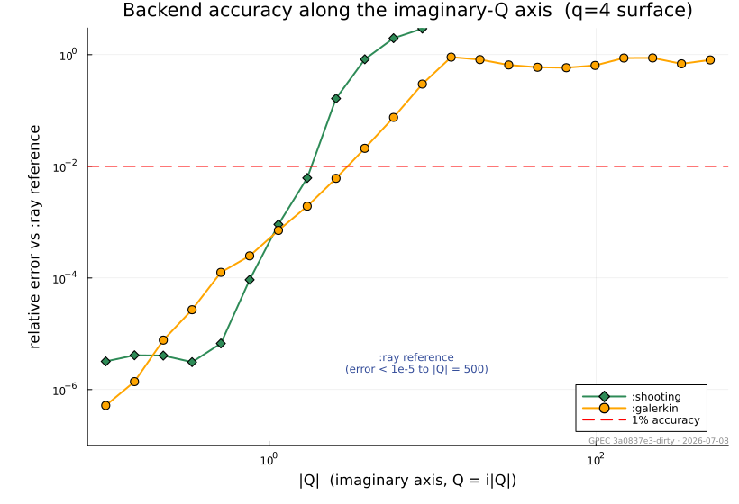
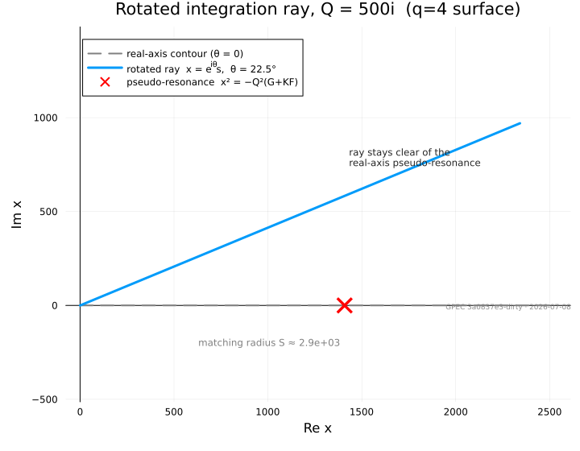

Tearing Module
The Tearing module groups the resistive tearing-mode analysis stack: InnerLayer (per-surface inner-layer matching data Δ(Q) for the GGJ and SLAYER models), Dispersion (physics-agnostic complex-plane scan and contour-intersection root extraction), and Runner (user-facing TOML configuration, profile loading, and HDF5 output).
Layer Inputs
Equilibrium/ForceFreeStates glue that assembles per-surface inner-layer inputs.
GeneralizedPerturbedEquilibrium.Tearing.LayerOverlapScan — Type
LayerOverlapScanPer-surface resistive layer widths and the psihigh they imply, from resistive_layer_overlap.
All widths are in normalized flux, converted from the metre-valued LayerWidths scales by Δψ = w / |da/dψ| so they can be compared against surface separations in ψ. Comparing the metre values directly against ψ is a dimensional error.
Fields
m,n– resonant mode numbers per surface, ordered by increasing ψpsi– surface location in normalized fluxrs– minor radius at the surface in metersdelta_s_m–|δ_s|, the Riccati resistive layer width, in meterswidth_delta_s– the same width in normalized flux,|δ_s|/|da/dψ|width_visco– the visco-resistive comparison scale as a Δψ widthwidth_dr– the diffusive-resistive width of Fitzpatrick (2025) Eq. (100) as a Δψ width. This is the criterion the recommendation uses: the paper's Sect. 5.6 shows that strong shear near the separatrix forces every layer there into the DR regimeextrapolated– true when the surface was located outside the equilibrium's ψ grid via the edge q-lawpsihigh_delta_s,psihigh_visco,psihigh_dr– domain implied by each width channel,nothingwhen that channel never overlaps within the scanned rangepsihigh– the recommendation, equal topsihigh_dr; the other two channels are reported for comparison and do not set the domainfirst_overlap– index of the first surface that overlaps its inner neighbour,nothingwhen none docaveats– reasons the verdict itself is qualified: an overlap that could not be established or excluded, or one decided by a surface placed on the separatrix lawnotes– per-surface and bookkeeping detail that does not qualify the verdict
GeneralizedPerturbedEquilibrium.Tearing.resistive_layer_overlap — Method
resistive_layer_overlap(equil, profiles::KineticProfiles; n_tor, kwargs...)
-> LayerOverlapScanLocate the q = m/n_tor rational surfaces, compute each one's resistive layer width, and report the outermost psihigh at which adjacent layers are still separated.
Surfaces inside the equilibrium grid come from ForceFreeStates._find_rational_surfaces (Brent root-finding segmented between q-extrema, so reverse shear is handled). Surfaces beyond the grid come from separatrix_q_law when extrapolate=true, which is what lets the scan recommend a domain larger than the one it was handed. That law diverges at the X-point flux, which a reconstruction may place slightly outside its own boundary, so rationals can lie at ψ > 1: inside the real separatrix but beyond the equilibrium GPEC holds. Only the first of them is placed, to judge whether the outermost surface inside is clean, and it is scored only if the kinetic profiles extend that far. The recommendation never exceeds ψ = 1, and when no overlap can be established the domain keeps its requested limit.
Layer widths come from slayer_algebraic_widths via build_slayer_inputs, so the scan uses the same plasma inputs and the same resistivity closure as the SLAYER analysis itself. The criterion channel needs no Riccati solve; delta_s is solved per surface as a reported comparison only.
Arguments
equil– a formedPlasmaEquilibriumprofiles–KineticProfilesspanning the scanned ψ range
Keyword arguments
n_tor– toroidal mode number; surfaces are q = m/n_torm_max– runaway backstop on the poloidal mode number (default2000), not the physics limit: the outward search should terminate withinpsi_gapof the separatrix flux, and ifm_maxis what stops it instead, the scan says so incaveatsbecause "no overlap found" would then rest on a non-physical cutoffmax_layer_solves– bound on how many surfaces get a Riccati layer solve (default64, innermost kept). The first overlap decides the answer, so surfaces far beyond it only cost time; when the bound bites,caveatsrecords that a "no overlap" verdict is inconclusivepsihigh_safe– treat this as the outer edge of trusted equilibrium data (defaultequil.profiles.xs[end])psi_gap– never place a surface closer than this to the separatrix flux on the direct path (default1e-9, purely numerical: it stops the outward search from crowding indefinitely onto the separatrix where surfaces become indistinguishable). Inverse equilibria ignore it: they have a prescribed boundary and the search runs to ψ = 1 on the real q. Geometry needs no clamp of its own –radial_labelderivatives are analytic and valid under extrapolationextrapolate– search pastpsihigh_safeon the separatrix q-law (defaulttrue)theta– poloidal angle for the minor-radius chord (default0.0)rs_method– radial label the widths and their ψ-conversion Jacobian are taken in (default:midplane; seeradial_label). The caller wiring this scan into the domain truncation passes:flux, the label Fitzpatrick Eq. (100) is anchored tobt,mu_i,zeff,chi_perp_e,chi_perp_i,chi_tor,tau_E,P_perp_model,resistivity_model,lnLambda_form– passed through tobuild_slayer_inputs. The defaults are placeholders: a caller scanning a real run must pass that run's own values, as the domain-truncation wiring does
The overlap criterion is that surface k overlaps its inner neighbour when ψ_k − w_k/2 < ψ_{k-1} + w_{k-1}/2. When that happens both surfaces are contaminated, so the recommendation cuts at the inner edge of surface k-1, leaving k-2 as the outermost trustworthy surface.
The module provides an abstract InnerLayerModel interface and two concrete models: the GGJ (Glasser–Greene–Johnson) layer documented below, with three interchangeable solver backends, and the pressureless SLAYER Fitzpatrick Riccati layer. Further inner-layer models (kinetic layers) plug in through the same interface.
Two papers define the equations and the asymptotic construction; the code and this page cite them by equation number rather than restating them:
- GWP2016 — A. H. Glasser, Z. R. Wang and J.-K. Park, Computation of resistive instabilities by matched asymptotic expansions, Phys. Plasmas 23, 112506 (2016).
- GW2020 — A. H. Glasser and Z. R. Wang, Asymptotic solutions and convergence studies of the resistive inner region equations, Phys. Plasmas 27, 012506 (2020).
Equations and matching data
The GGJ layer equations (GWP2016 Eq. 11 ≡ GW2020 Eq. 1) couple the perturbed flux $\Psi$ and the layer variables $\Xi$, $\Upsilon$ in the scaled distance $x$ from the rational surface. Their equilibrium coefficients $E, F, G, H, K$ (GWP2016 Eq. A8) are held in GGJParameters. A physical growth rate $\gamma$ maps to the scaled $Q$ by inner_Q (GWP2016 Eqs. A11, A14–A16), and rescale_delta returns the matching data to physical units. The model requires Mercier stability, $D_I < 0$ (mercier_di, GWP2016 Eq. A9), so that at large $x$ the solutions include two power laws (GW2020 Eq. 49).
The matching datum $\Delta$ is the ratio of the large to the small power-law coefficient. Imposing the two parities at $x = 0$ gives the pair $(\Delta_+, \Delta_-)$ of GWP2016 Eqs. (34)–(35). Parity is that of the displacement $\Xi$ (GWP2016 Eq. 34; Pletzer, Bondeson & Dewar, J. Comput. Phys. 115, 530 (1994), Eqs. 32–33): $\Delta_+$ is even, $\Psi(0)=\Xi'(0)=\Upsilon'(0)=0$, the interchange channel; $\Delta_-$ is odd, $\Psi'(0)=\Xi(0)=\Upsilon(0)=0$, the tearing channel. Positional pairs, such as deltar in the matching and RaySolveResult.Δ, are always ordered $(\Delta_+, \Delta_-)$, like the unknowns $d_\pm$ of GWP2016 Eq. (38) and Pletzer, Bondeson & Dewar Eqs. 83, 85; InnerLayerResponse names them interchange and tearing.
Numerical method
The figures use the $q = 4$ DIII-D-like surface of q4_surface_benchmark ($S \approx 4.6\times10^{6}$, $D_I \approx -0.31$).
Solver backends
The GGJ model exposes three solvers through the solver type parameter of GGJModel; all use the same large-$x$ asymptotic basis and return $\Delta$ in the same convention:
| backend | method | robust regime |
|---|---|---|
:shooting | backward stable shoot from $X_\mathrm{max}\to 0$ | $\lvert Q\rvert \ll 1$ |
:galerkin | Hermite-cubic finite-element (real axis) | surface- and $\arg Q$-dependent; see Choosing a backend |
:ray (default) | rotated contour: inward-marched far-field condition + Hermite-cubic BVP | $\lvert Q\rvert \sim 500$ on/near the imaginary axis |
Rotation and resistivity scans live on the imaginary-$Q$ axis, where the pseudo-resonance at $x^2 = -Q^2(G+KF)$ sits on the real-$x$ path. On the $q = 4$ surface there :shooting and :galerkin lose accuracy beyond $|Q| \sim 1$ and $|Q| \sim 4$ respectively (the poles of $\Delta(Q)$ themselves lie near the real-$Q$ axis):

The rotated ray
:ray writes the layer equations as $dv/dx = M(x)\,v$ in the plain state $v = (\Psi, \Xi, \Upsilon, \Psi', \Xi', \Upsilon')$. $M$ is polynomial in $x$, so $x = 0$ is an ordinary point and the system continues analytically onto the ray
\[x = e^{i\theta}\, s, \qquad s \in [0, S], \qquad \theta = \tfrac14\arg Q .\]
This angle makes the parabolic-cylinder exponent of the outer solutions real and lifts the pseudo-resonance off the contour; $\theta = 0$ is a real-axis solve.

Hermite-Galerkin BVP
On $[0, s_m]$ the system is solved with the :galerkin backend's Hermite-cubic assembly (GWP2016 Eq. 32) written on the ray, $A u_{ss} + e^{i\theta}B u_s + e^{2i\theta}C u = 0$, with the parity conditions at $s = 0$. The far end carries the point condition
\[v(s_m) = U_s + \Delta\, U_b + c_1 E_1 + c_2 E_2 ,\]
where $U_s, U_b$ are the small and large power-like solutions and $E_{1,2}$ the forward-decaying exponential pair; $\Delta, c_1, c_2$ replace the last node's six unknowns. Each cell resolves the local WKB rate, with a minimum cell count for small $|Q|$.
Far-field boundary and the inward march
The boundary data come from the same inps Wasow basis as the other backends (GW2020 Eqs. 3–53), evaluated at the radius $S$ where its residual is below tolerance (pick_smax). At large $|Q|$, $S$ lies far beyond $s_m$, and the power pair is marched inward by 2-stage Radau IIA modulo the decaying pair, the subspace in which $\Delta$ is defined. The decaying pair grows under backward integration at a rate $\sim\rho s$. Radau's stability function decays as $2/z$, so steps with every growing mode at $z > 8$ damp those directions while the slowly varying power pair stays resolved; the step count grows only like $\ln(S/s_m)$. Nearer $s_m$ the march resolves the growing directions, carries the decaying frame, and projects it out periodically. The damped zone runs in Complex{Double64} because its ill-conditioned implicit solves mix the power pair at a level $\sim\epsilon\rho S^2$.
On the real axis with imaginary $Q$ the switch to resolved steps lands on the pseudo-resonance, a turning point where the decaying directions cannot be identified; the default $\theta = \arg(Q)/4$ keeps it off the contour.
For matching, solve_inner_profile returns $\Delta$ and the layer-center fields $\Psi(0), \Xi(0)$ from the rotated solve; $x = 0$ lies on every contour, so these are the real-axis values. Fields across the layer on the real $\psi$ axis are an opt-in diagnostic (GGJModel(; real_profiles=true), not exposed in the deck): they come from an extra $\theta = 0$ solve, while the $x = 0$ values, and so the penetrated field, stay those of the rotated solve. The $\theta = 0$ solve's $\Delta_\pm$ are checked against the rotated ones (certΔ, which warns on disagreement, as can happen at large $|Q|$ near the imaginary axis).

Validation and benchmarks
Cross-check against the Fortran rmatch solver. At the Glasser & Wang (2020) Eq. (55) operating point $Q = 0.1234$ (real) the :galerkin backend reproduces the Fortran rmatch deltac solver to $\sim 10^{-8}$:
| quantity | :galerkin (= Fortran to $10^{-8}$) | :ray |
|---|---|---|
| $\Delta_+$ (interchange) | $3.698368\times 10^{4}$ | $3.69789\times 10^{4}$ |
| $\Delta_-$ (tearing) | $14.759721$ | $14.759715$ |
This point sits near a pole of $\Delta_+(Q)$, which amplifies every solver's error; hence the $1.3\times10^{-4}$ :galerkin↔:ray difference in $\Delta_+$ against $4\times10^{-7}$ in $\Delta_-$.
Physical benchmark on the imaginary axis. On the $q=4$ rational-surface benchmark (q4_surface_benchmark, $S \approx 4.58\times10^6$, $D_I \approx -0.312$) the :ray backend is pinned at $Q = 500i$, a regime entirely beyond :galerkin:
| quantity | value at $Q = 500i$ |
|---|---|
| $\Delta_+$ (interchange) | $2.4720 + 13.3540\,i$ |
| $\Delta_-$ (tearing) | $0.13750 + 0.74275\,i$ |
Convergence and contour invariance. $\Delta$ does not depend on the contour angle, so re-solving with each numerical knob perturbed in turn (delta_convergence) gives an error bar: at $Q = 500i$ the worst case is $\sim 5\times10^{-6}$ for $\Delta_+$ and $\sim 6\times10^{-7}$ for $\Delta_-$. Across machines and BLAS builds the values reproduce to $\sim 10^{-5}$ relative, hence the five significant figures above.

Choosing a backend
:ray is the default — GGJModel() constructs GGJModel{:ray}() — and the recommended backend for every $Q$. It uses the same Hermite-cubic weak form as :galerkin; they differ in where and how the far-field condition is imposed. :galerkin imposes it on the real axis through resonant and extension cells at the radius where the series residual reaches $10^{-7}$, on a fixed nx-cell grid. :ray takes the series data where the residual reaches smax_tol = $10^{-9}$ (pick_smax), marches them inward to $s_m$, where every exponential family has decayed 45 e-folds from the origin, and resolves the local WKB rate in every cell on $[0, s_m]$. Both radii are computed per solve; S, smax_tol and sm_fac override them, and delta_convergence perturbs them to give an error bar.
:galerkin takes a few milliseconds per solve, 3–60 times less than :ray, but its accuracy depends on the surface and on $\arg Q$ even at small $|Q|$. Against a tightened :ray reference, on the GW2020 Eq. (55) surface it errs by $7\times10^{-5}$ at $Q = 0.1$ and $3\times10^{-3}$ at $Q = 0.3$; near $\arg Q = 157.5^\circ$ it errs by order unity at $|Q| = 0.1$ on that surface and by 0.4 at $|Q| = 0.3$ on the $q = 4$ surface. :ray held $2\times10^{-6}$ on all three surfaces tested, for $|Q|$ from 0.01 to 1.
The backends take disjoint numerical-knob keywords: pass GGJModel(solver=:galerkin) explicitly when supplying the Galerkin nx/xfac knobs; passing them to :ray throws a MethodError.
using GeneralizedPerturbedEquilibrium.InnerLayer
p = GGJ.q4_surface_benchmark() # GGJParameters for the q=4 benchmark surface
γ = 500im * GGJ.q0(p) # physical rate placing Q on the imaginary axis at 500i
Δ = solve_inner(GGJModel(), p, γ) # Δ.interchange, Δ.tearing with the default :ray backend
# Full result (raw Δ, contour, mesh, nodal solution, boundary conditioning) via solve_ray:
res = solve_ray(p, GGJ.inner_Q(p, γ))
res.Δ, res.breaks, res.bc_cond # res.Δ = (Δ₊, Δ₋) = (interchange, tearing)API Reference
InnerLayer
GeneralizedPerturbedEquilibrium.InnerLayer.InnerLayerModel — Type
InnerLayerModelAbstract supertype for resistive inner-layer models. Each concrete model is a small, parameter-free type tag (often parameterized by a solver-choice symbol) that selects a solve_inner method.
Implementations live in submodules of InnerLayer, e.g. InnerLayer.GGJ.
GeneralizedPerturbedEquilibrium.InnerLayer.InnerLayerParameters — Type
InnerLayerParametersAbstract supertype for the per-surface physical-parameter structs consumed by the inner-layer models (SLAYERParameters, GGJParameters). Lets the dispersion runner and HDF5 output dispatch generically over a vector of single-model parameters.
GeneralizedPerturbedEquilibrium.InnerLayer.InnerLayerResponse — Type
InnerLayerResponseParity-projected inner-layer matching data at one rational surface. The two components correspond to the homogeneous parity solutions of the half-domain inner-layer problem (parity boundary conditions imposed at X = 0). They are the Δ_{j,±}(γ) of Glasser, Wang & Park, Phys. Plasmas 23, 112506 (2016), Eqs. (34)–(35).
Fields
tearing— odd-parity matching coefficient Δ₋: Ξ odd, Ψ even, the reconnecting channel whose Δ is the constant-ψ tearing Δ′ (Pletzer, Bondeson & Dewar, J. Comput. Phys. 115, 530 (1994), Eqs. 77, 86–87, 89). Every resistive inner-layer model populates it.interchange— even-parity matching coefficient Δ₊: Ξ even, Ψ odd, the non-reconnecting interchange channel carrying the Glasser, Greene & Johnson (1975) stabilization. Pressureless models (SLAYER) set it to zero.
Parity is that of the displacement Ξ, matched to the outer ξ (GWP2016 Eq. 34; Pletzer, Bondeson & Dewar Eqs. 32–33), with + even and − odd. The fields are named by the physics channel because the parity of the flux Ψ is the opposite. Positional pairs elsewhere in InnerLayer (e.g. the Δ of solve_inner_profile) are ordered (Δ₊, Δ₋) = (interchange, tearing).
GeneralizedPerturbedEquilibrium.InnerLayer.model_name — Method
model_name(model) -> StringThe deck inner_model token of model, e.g. "ggj_ray" or "slayer_fitzpatrick".
GeneralizedPerturbedEquilibrium.InnerLayer.solve_inner — Function
solve_inner(model::InnerLayerModel, params, γ::Number; kwargs...) -> InnerLayerResponseCompute the parity-projected matching data (the tearing and interchange fields of InnerLayerResponse) for the given inner-layer model, physical parameters params, and complex growth rate γ. Concrete models specialize this function.
See InnerLayerResponse for the physics-oriented field definitions. Pressureless models (SLAYER) populate only tearing and leave interchange at zero; finite-pressure models (GGJ) populate both.
GeneralizedPerturbedEquilibrium.InnerLayer.solve_inner_profile — Function
solve_inner_profile(model::InnerLayerModel, params, γ::Number; kwargs...)
-> (; Δ, x, Ψ, Ξ, dψdx, rescale, ...)Compute the inner-layer matching data and the reconstructed layer field profiles for the given model — everything an outer↔inner matching driver needs from the layer, so drivers never touch model internals. Returns a named tuple with at least:
Δ— the same matching data assolve_inner, as the pair (Δ₊, Δ₋) = (interchange, tearing)x— real ascending grid in the model's stretched inner coordinate,x ≥ 0with the rational surface atx = 0Ψ,Ξ—length(x) × 2profiles, columns in the order ofΔ, in the model's inner normalization:Ψthe normal-field (reconnected-flux) variable,Ξthe displacementdψdx— conversion to poloidal-flux distance,δψ = dψdx · xrescale— amplitude factor converting the inner-normalized profiles to the outer δψ-normalized convention (companion of the Δ rescale)
Concrete models may return additional diagnostic fields (e.g. a solve-quality certificate). Solver-knob keywords are model-specific.
GGJ
GeneralizedPerturbedEquilibrium.InnerLayer.GGJ.GGJModel — Type
GGJModel{S,O} <: InnerLayerModel
GGJModel(; solver=:ray, options...)Glasser–Greene–Johnson resistive inner-layer model. S selects the solver backend: :ray (default; rotated contour with an inward-marched far-field condition, robust at large |Q|), :galerkin (real-axis Hermite FEM with resonant/extension matching cells; accuracy depends on the surface and arg Q, even at small |Q|), or :shooting (|Q| ≪ 1 only). Backend keywords given at construction, e.g. GGJModel(; solver=:galerkin, nx=1280), apply to every solve.
Fields
options::NamedTuple- Backend keywords forwarded to every solve; call-site keywords win.
GeneralizedPerturbedEquilibrium.InnerLayer.GGJ.GGJParameters — Type
GGJParametersDimensionless parameters of the Glasser–Greene–Johnson inner-layer model at a single rational surface, plus the local Alfvén/resistive timescales needed to scale the matching data back to physical Δ. The equilibrium coefficients E, F, G, H, K, M are the flux-surface averages defined in GWP2016 Eq. (A8); E, F, G, H, K enter the inner-region equations (Eq. 11).
Fields
| field | meaning |
|---|---|
E | Glasser interchange parameter (enters Mercier D_I = E+F+H−¼) |
F | Glasser interchange parameter |
G | Coupling coefficient (curvature × pressure gradient) |
H | Pfirsch–Schlüter coefficient |
K | Glasser parameter |
M | Inertia factor (A8; enters K and Q₀, X₀); held, not used here |
taua | Local Alfvén time at the rational surface |
taur | Local resistive time at the rational surface |
v1 | Coordinate scale: inner X = v₁·δψ/X₀; enters rescale_delta |
ising | Index of the singular surface (traceability only) |
The growth rate γ is not stored here; it is a separate argument to solve_inner.
GeneralizedPerturbedEquilibrium.InnerLayer.GGJ.GGJShootingSystem — Type
GGJShootingSystemPrecomputed origin- and infinity-side arrays for the backward shoot. Construct via _build_shooting_system.
Fields
params,Q- Layer parameters and scaled growth rate.p1,pplus- p₁ = √(−D_I) and p₁ − 1/2.al0- Origin Frobenius exponents (p₁, 1/2, −p₁, −1/2), the diagonal of the origin exponent matrix.al1- First-order coupling in the origin-diagonalized basis.d0,d0inv- Origin diagonalizing matrix and its inverse.ups-(4, 4, nps)origin power-series coefficients in t²,ups[:, :, 1] = I.nps- Origin series length.d1- Diagonalizing matrix at large t.pexp- Logarithmic exponents of the large-t asymptotic basis.bl1- Coefficients ±√Q of t²/2 in the large-t exponentials.tmax,tmin- Shoot start (large t) and end (small t).
GeneralizedPerturbedEquilibrium.InnerLayer.GGJ.GalerkinCell — Type
GalerkinCellOne finite element of the Galerkin grid.
Fields
etype- Cell type (CT_NONE,CT_EXT2,CT_EXT1,CT_EXT,CT_RES).x_left,x_right- Cell end points.x_lsode- Upper limit of the resonant-cell integral and the xmax surface term (`CTRES` only).np- Highest local Hermite slot per component: 3 for Hermite cells, 1 forCT_EXT(left node only), −1 forCT_RES.map-(mpert, np+1)local-to-global DOF map;CT_EXTappends a column of asymptotic DOFs,CT_RESholds only those.emap- Asymptotic DOF indices shared byCT_EXTandCT_RES; onlyemap[1]is active (noexp).
GeneralizedPerturbedEquilibrium.InnerLayer.GGJ.GalerkinWorkspace — Type
GalerkinWorkspaceGrid, banded system and scratch buffers of one Galerkin solve.
Fields
cells- Grid cells from x = 0 outward.ndim- Number of global unknowns.nx- Number of cells.kl- Banded half-bandwidth (ku = kl).mat-(2kl+ku+1, ndim, 2)LAPACK banded matrices, one per parity (1 = even/Δ₊, 2 = odd/Δ₋).rhs,sol-(ndim, 2)right-hand sides and solutions per parity.cell_mat_buf,cell_mat_ext_buf-(3, 3, 4, 4)per-cell scratch for the Hermite and extension terms.cell_rhs_ext_buf-(3, 4)per-cell extension RHS scratch.ab_buf,rhs_buf- Scratch copies for the banded LU solve.
GeneralizedPerturbedEquilibrium.InnerLayer.GGJ.InnerAsymptoticsCache — Type
InnerAsymptoticsCacheFrozen inps Wasow asymptotic-basis construction for one (GGJParameters, Q) pair, stored as SMatrix/SVector for allocation-free evaluation. Index convention: P[k+1] holds the k-th-order matrix P_k, etc.
Fields
params, Q, kmax— input parameters and series truncation order.R = (r₊, r₋)— Mercier-shifted Frobenius exponents at infinity (Eq. 49).T— 6×6 eigenvector basis of A₀ (Eq. 7).J—(J₀, J₁, J₂), the J-rotated coefficient matrices (Eqs. 9–10).P— splitting matrices, k = 0..kmax+2 (Eqs. 16, 22).Qmat— 2×2 inner-block transformation matrices, k = 0..kmax+2 (Eqs. 32–39).Y— 2×2 series matrices Yk = Y₀Zk, k = 0..kmax (Eqs. 50–52).
GeneralizedPerturbedEquilibrium.InnerLayer.GGJ.RaySolveResult — Type
RaySolveResultOutput of solve_ray.
Fields
Δ: rescaled matching data (Δ₊, Δ₋) = (interchange, tearing), the even (isol = 1) and odd (isol = 2) parities of the displacement Ξ.Δraw: the same pair in raw inps normalization, beforerescale_delta.cexp: decaying-pair coefficients (c₁, c₂) at s_m, one column per parity.Q,θ: scaled eigenvalue and contour angle.S: series radius where the far-field data were taken.series_ok: whetherpick_smaxreached its residual tolerance.bc_cond: condition number of the column-normalized boundary basis [Us, Ub, E].breaks: Hermite cell boundaries on [0, s_m].cfl,min_cells: mesh resolution parameters used byray_breaks.ws: the full Galerkin workspace of the BVP (system buffers included); the nodal solution isws.sol, both parities.
GeneralizedPerturbedEquilibrium.InnerLayer.GGJ._assemble_and_solve_point! — Method
_assemble_and_solve_point!(ws, params, Q, θ, Us, Ub, E; nq=6) -> (Δraw, cexp)Hermite Galerkin solve on the all-CT_NONE grid of ws along the ray x = e^{iθ}s, with the far-field condition imposed strongly at the last node: its state is v = Us + Δ·Ub + c₁E₁ + c₂E₂, with Us, Ub, E given as (Ψ, Ξ, Υ, Ψ', Ξ', Υ') in x-derivatives. The last node's six DOFs are replaced by (Δ, c₁, c₂), tested in the same three directions. Returns the raw Δ and decaying-pair coefficients per parity (isol = 1 even/Δ₊, 2 odd/Δ₋); ws.sol holds the full nodal solution afterwards.
GeneralizedPerturbedEquilibrium.InnerLayer.GGJ._build_shooting_system — Method
_build_shooting_system(p::GGJParameters, Q::ComplexF64; nps=8, rtol=1e-6, fmax=1.0)Construct a GGJShootingSystem for the given parameters p and complex frequency Q, precomputing the origin and infinity asymptotic arrays used by the forward/backward shoots.
GeneralizedPerturbedEquilibrium.InnerLayer.GGJ._physical_uv — Method
_physical_uv(params, Q, x) -> (I, U, V)3×3 coefficients of I·u'' − V·u' − U·u = 0 for u = (Ψ, Ξ, Υ) at real or complex x, with (I, V, U) = (A, −B, −C) of GWP2016 Eqs. 12–15; each row is one equation of GWP2016 Eq. 11.
GeneralizedPerturbedEquilibrium.InnerLayer.GGJ.asymptotic_profile — Method
asymptotic_profile(params, res::RaySolveResult, srange) -> (; s, x, Ψ, Ξ, Υ)Evaluate the analytic representation u_small + Δ·u_big on the ray for s ≥ res.S; concatenated with solution_profile it should join the numeric solution seamlessly across the march zone.
GeneralizedPerturbedEquilibrium.InnerLayer.GGJ.asymptotic_residual — Method
asymptotic_residual(cache::InnerAsymptoticsCache, x::Number) -> SVector{2,Float64}Convergence measure of the asymptotic basis at real or complex x for each of the two algebraic columns, the analogue of GW2020 Eq. 54 in the J-rotated basis. Returns ‖dU − x·matrix·U‖∞ / max(‖dU‖∞, ‖x·matrix·U‖∞) per column, where matrix = J₀ + xfac·J₁ + xfac²·J₂ is the J-rotated coefficient matrix (the residual of v' = xJv, GW2020 Eq. 6).
GeneralizedPerturbedEquilibrium.InnerLayer.GGJ.boundary_basis — Method
boundary_basis(params, Q, cache, θ, S; growth=30.0, seed=20260707, dp_res=20.0)
-> (Us, Ub, E, cond_est)Boundary data at s = S taken directly from the inps series, used when the BVP edge is S itself (sm ≳ S): Us, Ub are the small/large power-like solutions as 6-component states in the inps normalization, E the numerically-generated decaying pair, `condest` the condition number of the column-normalized basis.
GeneralizedPerturbedEquilibrium.InnerLayer.GGJ.build_asymptotics — Method
build_asymptotics(params::GGJParameters, Q::ComplexF64; kmax::Int=8) -> InnerAsymptoticsCacheConstruct the inps Wasow asymptotic basis (GW2020 Eqs. 7–53), truncating each power series at order kmax. Evaluate with evaluate_asymptotics; pick a matching radius with pick_smax.
GeneralizedPerturbedEquilibrium.InnerLayer.GGJ.decaying_pair — Method
decaying_pair(params, Q, θ, S; growth=30.0, seed=20260707, dp_res=20.0) -> E (6×2)Orthonormal basis of the forward-decaying pair at s = S on the ray: random seeds integrated backward over [S, S+ΔS] with fully-resolved RK4, ΔS sized so the pair separates from everything else by ≈ growth e-folds.
GeneralizedPerturbedEquilibrium.InnerLayer.GGJ.delta_convergence — Method
delta_convergence(params, Q; verbose=true, kwargs...) -> (; Δ, spread, base, table)Error bar for the matching data: re-solve with each numerical knob perturbed in turn (contour angle, mesh, series order and radius, march tolerance, BVP edge s_m, decaying-pair separation) and report the relative change of (Δ₊, Δ₋); spread is the worst case per parity. θ moves outward only, away from the pseudo-resonance x² = −Q²(G+KF).
GeneralizedPerturbedEquilibrium.InnerLayer.GGJ.evaluate_asymptotics — Method
evaluate_asymptotics(cache::InnerAsymptoticsCache, x::Number; derivative=true, apply_T=true) -> (U, dU)Evaluate the inps asymptotic basis at x, real (x > 0) or complex on a rotated contour (principal branch of x^r; the series is in 1/x², so valid for |arg x| < π/2). Returns the 6×2 complex matrix U whose two columns are the power-like (Mercier) solutions of the GGJ system (column 1 large, column 2 small), and (if derivative=true) the 6×2 matrix dU of their derivatives dU/dx.
If apply_T=false, the result is left in the J-rotated basis (used by asymptotic_residual). The default apply_T=true returns it in the GW2020 Eq. (2) state basis, which physical_ua_dua converts to (Ψ, Ξ, Υ).
GeneralizedPerturbedEquilibrium.InnerLayer.GGJ.glasser_wang_2020_eq55 — Method
glasser_wang_2020_eq55(; taua=1.0, taur=1e6, v1=1.0) -> GGJParametersD-shaped aspect-ratio-2, q = 2 surface from Glasser & Wang, Phys. Plasmas 27, 012506 (2020), Eq. 55 (coefficients transcribed verbatim), the benchmark of their inps Wasow-basis convergence study (Figs. 1–3). At its operating point Q = 1.234e-1 (Fig. 1) the GGJ backends are cross-checked against the Fortran rmatch deltac; the paper's Δ_± (Eq. 54) is a series-convergence norm, not matching data.
taua, taur, v1 default to a unit normalization; override them for physical cases.
GeneralizedPerturbedEquilibrium.InnerLayer.GGJ.inner_Q — Method
inner_Q(p::GGJParameters, γ::Number) -> ComplexF64Scaled inner-layer growth rate Q = γ / Q₀ (GWP2016 Eq. A11).
GeneralizedPerturbedEquilibrium.InnerLayer.GGJ.march_boundary — Method
march_boundary(params, Q, θ, S, s_m, Us, Ub; rtol=1e-9, ztrk=0.3, purge_budget=2.5,
growth=30.0, seed=20260707, dp_res=20.0)
-> (Us_m, Ub_m, F)Transport the power-pair boundary data from the series radius S inward to s_m along the ray, modulo the decaying exponential pair (the quotient in which Δ is defined): 2-stage Radau IIA with purges against a carried decaying frame. rtol sets the step factor c = (rtol/100)^{1/3}; ztrk caps resolved-band steps at ztrk/gmax; `purgebudgetis the e-folds between purges;growth,seed,dpresgo to [decayingpair`](@ref).
GeneralizedPerturbedEquilibrium.InnerLayer.GGJ.mercier_di — Method
mercier_di(p::GGJParameters) -> Float64Mercier interchange index D_I = E + F + H − 1/4 (GWP2016 Eq. A9); D_I > 0 means local ideal interchange instability.
GeneralizedPerturbedEquilibrium.InnerLayer.GGJ.mercier_dr — Method
mercier_dr(p::GGJParameters) -> Float64Resistive interchange index D_R = E + F + H² (GWP2016 Eq. A10); D_R > 0 means local resistive interchange instability.
GeneralizedPerturbedEquilibrium.InnerLayer.GGJ.ode_matrix — Method
ode_matrix([CT,] p::GGJParameters, Q, x) -> SMatrix{6,6,CT}Coefficient matrix M(x) of GWP2016 Eq. 11 as dv/dx = M v, v = (Ψ, Ξ, Υ, Ψ', Ξ', Υ'), for real or complex x. M is polynomial in x, so x = 0 is an ordinary point and the system continues analytically to complex x. CT selects the element type (default ComplexF64; Complex{Double64} for the extended-precision march).
GeneralizedPerturbedEquilibrium.InnerLayer.GGJ.p1 — Method
p1(p::GGJParameters) -> Float64p₁ = √(−D_I), setting the large-x Frobenius exponents r± = 3/2 ± p₁ (GW2020 Eq. 49). Throws unless D_I < 0 (Mercier-stable required).
GeneralizedPerturbedEquilibrium.InnerLayer.GGJ.physical_ua_dua — Method
physical_ua_dua(cache, x::Number) -> (ua, dua)Convert the inps 6×2 basis at real or complex x to physical (Ψ, Ξ, Υ) values and x-derivatives, each 3×2 (column 1 = large power solution, 2 = small). The inps columns are in the GW2020 Eq. (2) state u = (xΨ, Ξ, Υ, (xΨ)'/x, Ξ'/x, Υ'/x), hence the /x and ·x factors; same map as the deltac inpso_get_ua/dua convention.
GeneralizedPerturbedEquilibrium.InnerLayer.GGJ.pick_smax — Method
pick_smax(params, Q; θ=angle(Q)/4, eps=1e-9, kmax=12, cache=nothing,
slogmin=-1.0, slogmax=6.5, dslog=0.01) -> (S, cache, achieved)Sweep s log-uniformly upward and return the smallest s at which the series residual (GW2020 Eq. 54) along x = e^{iθ}s drops below eps. If never reached, returns the residual-minimizing s with achieved = false.
GeneralizedPerturbedEquilibrium.InnerLayer.GGJ.q0 — Method
q0(p::GGJParameters) -> Float64Growth-rate scale Q₀ = X₀ / τ_A (GWP2016 Eq. A16); physical rate = Q₀ Q (Eq. A11).
GeneralizedPerturbedEquilibrium.InnerLayer.GGJ.q4_surface_benchmark — Method
q4_surface_benchmark() -> GGJParametersPhysical q = 4 rational-surface benchmark point (S = τR/τA ≈ 4.58×10⁶, DI ≈ −0.31166, p₁ = √(−DI) ≈ 0.5583). Primary validation point for the rotated-ray backend on the imaginary-Q axis (pinned at Q = 500i in the test suite).
GeneralizedPerturbedEquilibrium.InnerLayer.GGJ.ray_breaks — Method
ray_breaks(params, Q, θ, S; cfl=0.2, min_cells=1024) -> Vector{Float64}Cell boundaries 0 = s₀ < s₁ < … = S for the Hermite BVP: each cell resolves the full local WKB rate μ + ρs (fast Ohm and Υ-family pair μ = |√Q| + √(|Q|·|G+KF|), parabolic pair ρ = Re(e^{2iθ}/√Q)) whether or not the mode is present, since unresolved dormant modes alias into spurious discrete ones. min_cells floors the resolution where the local rates are small (|Q| ≪ 1).
GeneralizedPerturbedEquilibrium.InnerLayer.GGJ.rescale_delta — Method
rescale_delta(Δ, p::GGJParameters) -> SVector{2,ComplexF64}Rescale the matching data to physical Δ by S^(2√(−D_I)/3) · v₁^(2√(−D_I)), element-wise on the pair (Δ₊, Δ₋). The factor X₀^(−2√(−DI)) = S^(2√(−DI)/3) is Wang et al., Phys. Plasmas 27, 122503 (2020), text after Eq. 11.
GeneralizedPerturbedEquilibrium.InnerLayer.GGJ.sfac — Method
sfac(p::GGJParameters) -> Float64Lundquist number S = τ_R / τ_A.
GeneralizedPerturbedEquilibrium.InnerLayer.GGJ.solution_profile — Method
solution_profile(res::RaySolveResult; npc=8) -> (; s, x, Ψ, Ξ, Υ)Reconstruct (Ψ, Ξ, Υ) on the solution contour from the Hermite nodal solution, npc points per cell; each field is npts × 2 with columns (even, odd) as in Δ, and x = e^{iθ}s. For rotated solves the fields live on the ray, not the real axis.
GeneralizedPerturbedEquilibrium.InnerLayer.GGJ.solve_ray — Method
solve_ray(params::GGJParameters, Q; θ=angle(Q)/4, kmax=12, S=nothing, smax_tol=1e-9,
cfl=0.2, min_cells=1024, nq=6, verbose=false, …) -> RaySolveResultSolve the GGJ inner-layer problem on the rotated ray x = e^{iθ}s. Δ is the rescaled pair (Δ₊, Δ₋) = (interchange, tearing), directly comparable to the :galerkin backend; θ = 0 is a real-axis solve.
Both boundary points are computed per solve. S defaults to the smallest radius where the series residual is below smax_tol with order kmax (pick_smax; it warns and uses the best point if the tolerance is not reached). The BVP edge sm is where every exponential family has decayed 45 e-folds from the origin, from the local spectrum, scaled by `smfac.cfl,mincellsset the Hermite grid ([raybreaks](@ref)) andnqits quadrature.marchrtolis [marchboundary](@ref)'srtol;growth,seed,ztrk,purgebudget,dpresgo tomarchboundary/[decayingpair](@ref);handoff` (diagnostic) supplies (Us, Ub) at S.
GeneralizedPerturbedEquilibrium.InnerLayer.GGJ.x0 — Method
x0(p::GGJParameters) -> Float64Inner-layer length scale X₀ = S^(−1/3) (GWP2016 Eq. A16); physical x = X₀ X (Eq. A11).
GeneralizedPerturbedEquilibrium.InnerLayer.solve_inner — Method
solve_inner(::GGJModel{:galerkin}, params::GGJParameters, γ::Number;
kmax::Int=8, nx::Int=512, nq::Int=4, pfac::Float64=1.0,
cutoff::Int=5, xfac::Float64=1.0, tol_res::Float64=1e-5)
-> InnerLayerResponseSolve the GGJ inner-layer matching problem using the Hermite-cubic finite element (Galerkin) method (GWP2016 Sec. III), in the "resonant + noexp + inps" configuration.
Returns the parity-projected matching data (GWP2016 Eqs. 34–35), rescaled by rescale_delta, as an InnerLayerResponse: interchange is the even-parity Δ₊ (isol = 1), tearing the odd-parity Δ₋ (isol = 2).
Knobs: kmax series order; nx cell count; nq Gauss–Lobatto order; pfac grid packing; cutoff extension-cell span (cells nx−cutoff−1 … nx−1); xfac scale on the two inner matching radii; tol_res resonant-cell quadrature tolerance.
GeneralizedPerturbedEquilibrium.InnerLayer.solve_inner — Method
solve_inner(::GGJModel{:ray}, params::GGJParameters, γ::Number; kwargs...)
-> InnerLayerResponseRotated-ray backend: converts γ via inner_Q, forwards keywords to solve_ray, and returns the parity-projected matching data (Δ₊, Δ₋) as the interchange and tearing fields of InnerLayerResponse. Preferred for |Q| ≳ 1 and near the imaginary axis; use solve_ray directly when the full RaySolveResult is wanted. real_profiles is a profile-only model option (see solve_inner_profile) and is ignored here.
GeneralizedPerturbedEquilibrium.InnerLayer.solve_inner — Method
solve_inner(::GGJModel{:shooting}, params::GGJParameters, γ::Number;
reltol::Float64=1e-6, abstol::Float64=1e-6,
rtol_origin::Float64=1e-6, nps::Int=8,
fmax::Float64=1.0, solver=Tsit5()) -> InnerLayerResponseSolve the GGJ inner-layer matching problem by stable backward shooting in the origin-diagonalized 4×4 basis.
Returns an InnerLayerResponse rescaled by rescale_delta, with interchange = Δ₊ (Ξ even) and tearing = Δ₋ (Ξ odd), the same convention as the other GGJ backends.
Tolerances reltol/abstol are the integrator tolerances; rtol_origin controls the truncation error of the origin Frobenius series and the choice of tmin.
GeneralizedPerturbedEquilibrium.InnerLayer.solve_inner_profile — Method
solve_inner_profile(::GGJModel{:galerkin}, params::GGJParameters, γ::Number; kwargs...)
-> (; Δ, x, Ψ, Ξ, dψdx, rescale)Hermite-FEM implementation of the solve_inner_profile interface: real-axis solve, so Δ and the profiles come from the same solution. Same numerics/kwargs as solve_inner(GGJModel(; solver=:galerkin), ...).
GeneralizedPerturbedEquilibrium.InnerLayer.solve_inner_profile — Method
solve_inner_profile(::GGJModel{:ray}, params::GGJParameters, γ::Number;
real_profiles=false, npc=8, certify_rtol=1e-3, kwargs...)
-> (; Δ, x, Ψ, Ξ, dψdx, rescale, certΔ)Rotated-ray implementation of the solve_inner_profile interface. Δ and the layer-center fields come from the solve at θ = arg(Q)/4; x = 0 lies on every contour, so Ψ(0), Ξ(0) are the real-axis values, and by default only they are returned (x = [0.0], certΔ = NaN). With real_profiles = true the fields across the layer (x > 0) come from an extra θ = 0 solve (npc points per cell), a diagnostic; the x = 0 row stays the rotated solve's, and certΔ is the largest relative difference of the two solves' Δ₊, Δ₋, warned above certify_rtol. Other keywords forward to solve_ray, except θ.
SLAYER
GeneralizedPerturbedEquilibrium.InnerLayer.SLAYER.LayerWidths — Type
LayerWidthsResistive inner-layer length scales at one rational surface, in meters. The primary quantity is delta_s_m, the resistive layer thickness from the SLAYER del_s Riccati solve; d_beta is the β-weighted ion scale it is built from, retained as a drift-scale reference.
Fields
ising,m,n– surface index and mode numbers (traceability)dels_db– dimensionlessδ_s / d_βfromriccati_del_sdelta_s– complex layer thicknessδ_s = dels_db · d_β[m]delta_s_m–|δ_s|, the resistive layer thickness in meters (primary)d_beta– β-weighted ion scalec_β·d_iin meters (drift reference)delta_norm– layer normalization lengthr_s · S^(-1/3)in meters, the length by which Δ' is made dimensionless (Δ̂' = Δ'·delta_norm). Shared by all four regimes of Burgess et al. (2026) Eqs. (10)-(13), not specific to any one of them, and not the classic non-rotating Furth-Killeen-Rosenbluth (1963) constant-ψ tearing width, which scales asS^(-2/5)and is not computed here. Exactly the reciprocal of thedelta_nΔ-normalization already carried onSLAYERParameters, restated as a length for comparison withdelta_s_mdelta_dr– diffusive-resistive layer thickness in meters, Fitzpatrick (2025) Eq. (100). Strong magnetic shear near the separatrix forces every resonant layer in that region into the diffusive-resistive (nu = 1/4) regime, so this is the width the edge overlap criterion compares against surface spacing. In the paper's normalized radius,delta_hat = tau_A^(1/2) / (tau_R^(1/4) tau_E^(1/4) d_beta_hat^(1/2) (n|s|)^(1/2)); withlu = tau_R/tau_AandP_perp = tau_R/tau_Ethat islu^(-1/2) P_perp^(1/4) / (d_beta_hat^(1/2) (n|s|)^(1/2)), scaled byrsfor meters. Distinct fromdelta_visco, which is the 2/3 power of the same timescale grouping and carries neither thed_betanor the shear factordelta_visco– viscous-resistive scaledelta_norm · P_perp^(1/6)in meters, from theP^(1/6)broadening of the VR-regime growth rate, Burgess et al. (2026) Eq. (11). The paper gives the growth rate rather than an explicit width; this is the corresponding length
delta_s_m should sit within a few orders of magnitude of d_beta for a well-posed surface (dels_db is O(1)); a large gap flags a normalisation or input problem.
GeneralizedPerturbedEquilibrium.InnerLayer.SLAYER.SLAYERModel — Type
SLAYERModel{S} <: InnerLayerModelSLAYER inner-layer model selector. The type parameter S selects the Riccati formulation:
:fitzpatrick– Pperp/Ptor Fitzpatrick formulation (default; Fitzpatrick 2023 two-fluid drift-MHD layer)
Future dispersion variants (e.g. :standard) may be added but are not currently implemented. The del_s formulation is exposed separately as the layer-thickness diagnostic slayer_layer_thickness, not as a dispersion solve_inner path.
GeneralizedPerturbedEquilibrium.InnerLayer.SLAYER.SLAYERParameters — Type
SLAYERParametersDimensionless layer-physics parameters at one rational surface for the Fitzpatrick two-fluid drift-MHD SLAYER inner-layer model (Fitzpatrick 2023; Park 2022), plus dimensional auxiliaries required for de-normalization. The parametrization uses P_perp, P_tor, and D_norm (not the older pr/pe/ds set).
| field | meaning |
|---|---|
ising | Singular-surface index (traceability only) |
m, n | Poloidal / toroidal mode numbers at this surface |
tau | Ti / Te |
lu | Lundquist number S = τR / τH |
c_beta | Compressibility √(βlocal / (1 + βlocal)) |
D_norm | (dβ/rs) · S^(1/3) · √ι_e (Fitzpatrick normalized scale) |
P_perp | Perpendicular Prandtl number τR / τ⊥ (set by P_perp_model) |
P_tor | Toroidal-direction Prandtl number τR / τ‖tor |
Q_e | Normalized electron diamagnetic: −tauk · ω_*e |
Q_i | Normalized ion diamagnetic: −tauk · ω_*i |
iota_e | Qe / (Qe − Q_i) |
tauk | Q-conversion factor S^(1/3) · τ_H [s] — multiplies ω to get Q |
tau_r | Resistive diffusion time [s] |
delta_n | Δ-normalization factor S^(1/3) / r_s [m⁻¹] |
rs | Minor radius at this surface [m] |
R0 | Major radius [m] |
bt | Toroidal field [T] |
sval_r | r-based magnetic shear r_s · (dq/dr) / q (Fitzpatrick convention) |
dr_val | Resistive interchange D_R = E + F + H² (critical-Δ input; auto-derived from GGJ coefficients unless overridden) |
dgeo_val | Connor et al. (2015) Eq. 59 geometric factor (0 unless supplied) |
eta | Parallel resistivity entering τR = μ₀rs²/η [Ω·m] |
d_beta | Beta-weighted ion length scale cβ · di [m] |
dc_tmp | Critical-Δ offset from chi_parallel matching |
dc_type | Selector for dc_tmp formula |
k_ref | Reference-length ratio K = rs · (dψN/dr) at this surface (1 = no Δ' conversion) |
alpha_mercier | Mercier Frobenius exponent α = √(−D_I) (Glasser-Greene-Johnson 1975 Eq. 48) governing the Δ' reference-length conversion (1/2 = slab/cylindrical value) |
k_ref and alpha_mercier feed the ψN → rs reference-length conversion of the outer Δ' matrix (see delta_prime_to_rs_reference in the Tearing runner): the slab layer, its dc_tmp critical-Δ, and the S^(1/3) Δ(Q) scale are all referenced to unit x̂ = (r−r_s)/r_s, while the outer BVP Δ' is referenced to unit ΔψN. Hand-built parameters default to `kref = 1`, which makes the conversion the identity.
The complex normalized growth rate Q = ω + iγ is not stored here; it is passed as a separate argument to solve_inner.
GeneralizedPerturbedEquilibrium.InnerLayer.SLAYER.build_slayer_inputs — Method
build_slayer_inputs(equil, sings, profiles; …) -> Vector{SLAYERParameters}Build a SLAYERParameters for each rational surface in sings, pulling geometry (minor radius, r-based shear, q, dq/dψ, R₀) from the in-memory equil::PlasmaEquilibrium and kinetic data (ne, Te, Ti, ω, ω\*e, ω_*i) from profiles::KineticProfiles.
Layer inputs are assembled directly from the in-memory equilibrium and profiles, without an intermediate file round-trip.
Arguments
equil–PlasmaEquilibriumsings–Vector{SingType}(one per resonant surface)profiles–KineticProfilesvalid across allsingsψ values
Keyword arguments
bt– toroidal field [T]. Scalar, callable ofpsi, ornothing(default). Whennothing, the physicalB_T = F(ψ) / (2π·R₀)is computed per surface from the equilibrium's F-spline. Note:equil.config.b0_normis a normalization (often just1.0), not the physical field, so passing it as a scalar is almost always wrong.mu_i– ion mass in proton-mass units (default2.0for D).zeff– effective charge. Scalar or a callable ofpsi, evaluated per surface (default1.0).chi_perp_e– electron perpendicular heat diffusivity [m²/s]. Scalar or a callable ofpsi(default1.0).chi_perp_i– ion perpendicular heat diffusivity [m²/s], scalar or callable ofpsi; required byP_perp_model = :chi_perp_iand:D_perp(defaultnothing).tau_E– whole-plasma energy confinement time τ̄E [s], required by `Pperpmodel = :tauE(defaultnothing). That mode takes the minor radiusaof the ψ = 1 surface from the:fluxlabel, whateverrs_method` is.P_perp_model– howP_perpis built; seeslayer_parameters(default:D_perp, as in the[SLAYER]deck).chi_tor– toroidal heat diffusivity [m²/s]. Scalar or a callable ofpsi(default1.0).dr_val– resistive interchange indexD_R = E + F + H²(Glasser-Greene-Johnson 1975) feeding the critical-Δ formulas (:lar,:fitzpatrick,:toroidal). Whennothing(default), Julia derives it per-surface from the equilibrium asdr_val_k = D_R(ψ_k) = E_k + F_k + H_k², consistent with Connor, Ham, Hastie & Liu 2015 (PPCF 57 065001) Eq. 59 which uses(−D_R)in the χ_‖-matching critical-Δ. Pass a scalar / vector / callable to override.NOTE: the χ‖-matching critical-Δ requires the resistive interchange index `DR = E + F + H²
(Glasser-Greene-Johnson 1975), NOT the Mercier indexDI = E + F + H − 1/4. The two differ by(H − 1/2)², which is non-trivial on shaped equilibria (~factor 3 on DIII-D); this code uses the physically correctDR`.dgeo_val– Connor 2015 (PPCF 57 065001) Eq. 59 geometric factor used bydc_type=:toroidal. Whennothing(default), an error is raised ifdc_type=:toroidalis also requested — the auto-derived formula additionally needs ⟨|∇ψ|²⟩ FSA whichResistGeometrydoesn't currently expose. Pass a scalar / vector / callable to use a prescribed value. (Fordc_type=:fitzpatrickand:lar, dgeo_val is not consulted.)dc_type–:none(default),:lar,:fitzpatrick, or:toroidal.rs_method– radial label definingr_sfor the whole layer stack::midplane(default),:halfwidth,:fsa,:volume, or:flux. Seeradial_labelfor the definitions. S, the r-based shear, Wd, and the Δ' reference-length factor `kref` all follow the choice together, so every option is self-consistent. Not exposed via TOML — programmatic use only.theta– poloidal angle at which to measure minor radius (default0.0, outboard midplane).resistivity_model–SauterNeoModel()(default),RedlNeoModel(),SpitzerModel(), orSpitzerHarmModel()(legacy Fitzpatrick σ∥). Sets the η entering τR = μ₀rs²/η. With a neoclassical model, `ftrapand ν*_e are taken from the surface'sResistGeometryif populated (viaForceFreeStates.resistevalall!), otherwise fall back to the ε-only Lin-Liu-Miller form andrs/R_0` aspect ratio.lnLambda_form– Coulomb-log form passed through toslayer_parameters(default:nrl;:wesson+SpitzerHarmModel()reproduces legacy SLAYER exactly).
GeneralizedPerturbedEquilibrium.InnerLayer.SLAYER.r_based_shear — Method
r_based_shear(rs, q, dq_dpsi, da_dpsi) -> Float64Convert a ψ-based shear to the r-based (Fitzpatrick) convention used throughout SLAYER:
s_r = r_s · (dq/dr) / q = r_s · (dq/dψ) / (q · da/dψ)rs is the minor radius at the surface, q the safety factor, dq_dpsi the radial derivative of q with respect to ψ, and da_dpsi the derivative of the surface minor radius with respect to ψ. The two ψ derivatives must use the same ψ convention (i.e., both with respect to ψ_norm or both with respect to physical ψ — the conversion factor cancels in the ratio).
Equivalent to the conversion s_Fitz = s_psiN · r_s / (psi_N · da_dpsiN).
GeneralizedPerturbedEquilibrium.InnerLayer.SLAYER.radial_label — Method
radial_label(equil; rs_method=:midplane, theta=0.0) -> (r_at, dr_dpsi_at)Build the pair of closures r_at(ψ) and dr_dpsi_at(ψ) defining one radial label for the layer stack. Both closures must come from the same label, because the r-based shear (r/q)dq/dr, τ_R = μ₀r²/η, τ_E = r²/χ, the d_β/r normalization, the Δ' reference-length factor k_ref = r_s/(da/dψ), and any metre-to-ψ width conversion all have to live in one coordinate; a mismatched r and dr/dψ silently corrupts every one of them. All derivatives are analytic — no label carries a finite-difference stencil.
Labels
:midplane– outboard-midplane chord from the magnetic axis attheta(historical default), natural for comparison with midplane diagnostics.:halfwidth– midplane half-chord, the mean of the outboard and inboard chords atθ = 0andθ = 0.5; shift-free. Coincides with the flux label on circular equilibria but is its own convention on shaped ones.:fsa– θ-mean surface radius, a 128-point midpoint mean of the local minor radius; the closest geometric approximation to:fluxat interior surfaces of shaped equilibria.:volume– cylinder-equivalent label√(V(ψ)/(2π²R₀)), the Rutherford-literature convention.:flux– toroidal-flux label. Fitzpatrick, Nucl. Fusion (2025), Eq. 30:dψ_p/dr = B₀ r g/qintegrates toψ_t = B₀r²/2, sor = √(2ψ_t/B₀)withψ_t = psio·∫₀^ψ (q/g) dψ′andg = F/(B₀R₀),F = R·B_tor. Noteprofiles.F_splinestores2πF, so the implementation divides it by 2π to formg. Defined from flux alone, it carries no circular-cross-section assumption, and its derivativedr/dψ ∝ qgrows toward a separatrix where the geometric labels'da/dψcollapses. Beyond the ψ grid the q spline is a cubic extrapolation that does not follow that growth, soq_beyond, a callable of ψ, supplies q there when the caller knows it.
On shaped equilibria the labels agree at low-q surfaces and diverge strongly near the edge, where the slab-layer matching is label-ambiguous regardless of choice. The label is selected programmatically; it is not exposed via TOML.
GeneralizedPerturbedEquilibrium.InnerLayer.SLAYER.riccati_del_s — Method
riccati_del_s(p::SLAYERParameters;
q_start=5*p.D_norm, q_min=1e-5,
reltol=1e-10, abstol=1e-10, maxiters=50_000,
solver=Rodas5P(autodiff=false)) -> ComplexF64Solve the SLAYER del_s inner-layer Riccati ODE and return the dimensionless layer-thickness ratio δ_s / d_β at one rational surface (see file header for references).
Integrates dW/dq = W/q − W²/q + q·E/F inward from q_start = 5·D_norm to q_min, with asymptotic boundary value W = −α·q_start² − 0.5, α = √(P̂_⊥ / (1 + 1/τ)). The result is −(π / √(1 + 1/τ)) · W′(q_min), evaluated from a single RHS call at the inner endpoint.
Returns NaN + NaN·im if the stiff integration does not converge (the caller treats this as a missing diagnostic rather than a hard error).
Multiply the result by p.d_beta to obtain the resistive layer thickness in meters (see slayer_layer_thickness).
GeneralizedPerturbedEquilibrium.InnerLayer.SLAYER.slayer_algebraic_widths — Method
slayer_algebraic_widths(p::SLAYERParameters) -> (; delta_norm, delta_visco, delta_dr)The three comparison scales that follow from p alone, with no Riccati solve. delta_dr is the channel the resistive-layer overlap criterion uses, so a scan needs only this.
GeneralizedPerturbedEquilibrium.InnerLayer.SLAYER.slayer_layer_thickness — Method
slayer_layer_thickness(p::SLAYERParameters; kwargs...) -> LayerWidthsCompute the resistive inner-layer thickness in meters at one rational surface.
Runs riccati_del_s for the dimensionless δ_s / d_β and scales by p.d_beta to obtain δ_s in meters. Keyword arguments are forwarded to riccati_del_s.
The algebraic comparison scales delta_norm, delta_visco and delta_dr come from p directly and do not depend on the Riccati solve; slayer_algebraic_widths returns just those, for callers that do not need delta_s.
GeneralizedPerturbedEquilibrium.InnerLayer.SLAYER.slayer_parameters — Method
slayer_parameters(; n_e, t_e, t_i, omega_e, omega_i,
qval, sval_r, bt, rs, R0, mu_i, zeff,
chi_perp_e, chi_tor,
m, n,
chi_perp_i=nothing, tau_E=nothing, a_minor=nothing,
dlnn=nothing, dlnTe=nothing, dlnTi=nothing,
P_perp_model=:D_perp,
dr_val=0.0, dgeo_val=0.0,
dc_type=:none, ising=0,
resistivity_model=SauterNeoModel(),
f_trap=nothing, nu_e_star=nothing,
R_major_eff=nothing,
lnLambda_form=:nrl)
-> SLAYERParametersBuild a SLAYERParameters for one rational surface from dimensional equilibrium and kinetic-profile inputs, in the Fitzpatrick two-fluid layer parametrization (Pperp/Ptor/Dnorm; the older magnetic/electron Prandtl pr/pe and ρs-based ds parameters are not used).
Arguments
n_e– electron density [m⁻³]t_e– electron temperature [eV]t_i– ion temperature [eV]omega_e– electron diamagnetic frequency [rad/s]omega_i– ion diamagnetic frequency [rad/s]qval– safety factor q at the surfacesval_r– r-based magnetic shear r·(dq/dr)/q (Fitzpatrick). User_based_shearto convert from ψ-based shear.bt– toroidal field [T]rs– minor radius at the surface [m]R0– major radius [m]mu_i– ion mass in proton-mass units (e.g. 2.0 for D)zeff– effective chargechi_perp_e,chi_tor– electron perpendicular heat / toroidal momentum diffusivity [m²/s]chi_perp_i– ion perpendicular heat diffusivity [m²/s], required byP_perp_model=:chi_perp_iand:D_perpdlnn,dlnTe,dlnTi– radial log-gradients of n, Te, Ti in any common radial variable (only their ratios enter; required byP_perp_model=:D_perp)tau_E– whole-plasma energy confinement time τ̄E [s], required by `Pperpmodel=:tauE`a_minor– plasma minor radiusa[m], required byP_perp_model=:tau_E(build_slayer_inputstakes it from the flux label)
An input a model does not use may be left as nothing; one it uses must be given.
P_perp_model– howP_perpis built (default:D_perp, as in the[SLAYER]deck)::D_perp– τR/τ⊥ with τ⊥ = rs²/D⊥, D⊥ the perpendicular particle diffusivity of Fitzpatrick, Phys. Plasmas 29, 032507 (2022), Eq. 16 (with Eqs. 4-6 and η⊥ = η∥). Its τ = (Te/Ti)(1+ηe)/(1+ηi) is the inverse orientation of thetau= Ti/Te field ofSLAYERParameters. With flat temperatures it falls to the:c_betavalue:chi_perp_e– τR·χ⊥,e/rs²:chi_perp_i– τR·χ⊥,i/rs²:P_phi– Pperp = Ptor (Fitzpatrick, Phys. Plasmas 30, 092512 (2023), Eq. 143):c_beta– Pperp = cβ² (J.-K. Park, Phys. Plasmas 29, 072506 (2022), Eq. 9 with K = 0), the χ⊥ → 0 limit of:D_perp:tau_E– Pperp = Ptor = τR/τE(rs) (Fitzpatrick 2023, Eqs. 37-38, 81-83 and 131), from a uniform χE = κe a²/τ̄E with κe = 3/16, the value for Te ∝ 1 − r̂² (Eq. 38). Other profile shapes change κe by a factor of order 2-3. Both Prandtl numbers come from χE, sochi_toris ignored in this mode
chi_perp_estill sets the critical-Δdc_tmpin every mode.m,n– poloidal / toroidal mode numbers at the surfacedr_val,dgeo_val– inputs for the critical-Δ formuladc_type– one of:none,:lar,:fitzpatrick,:toroidalising– singular-surface index for traceabilityk_ref– reference-length ratio K = rs·(dψN/dr) at the surface, used by the Tearing runner to convert the ψN-referenced outer Δ' to the rs-referenced convention this layer works in (default1.0, i.e. no conversion;build_slayer_inputsfills it from the equilibrium)alpha_mercier– Mercier Frobenius exponent α = √(−DI) for the same conversion (default0.5, the slab/cylindrical value at DI = −1/4)
Resistivity kwargs
The selected resistivity sets the resistive diffusion time τ_R = μ₀ r_s² / η and hence the Lundquist number and every normalized layer parameter derived from it.
resistivity_model–SauterNeoModel()(default: Sauter 1999 F33 trapped-particle correction, the physically-appropriate choice for H-mode tearing stability),RedlNeoModel()(improved high-ν* fit),SpitzerModel()(Sauter 18a fit, no trapped-particle correction), orSpitzerHarmModel()(Fitzpatrick Spitzer-Härm σ∥ — the legacy SLAYER closure; pair withlnLambda_form=:wessonto reproduce legacy τ_R exactly).f_trap– trapped-particle fraction at this surface. If not provided with a neoclassical model, falls back to Lin-Liu-Miller ε-only form withε = rs / (R_major_eff or R0).nu_e_star– electron collisionality. Ifnothingwith a neoclassical model, computed from Sauter 1999 Eq. 18b using the same ε.R_major_eff– ⟨R⟩ at the surface for the ν*_e formula (defaultR0).lnLambda_form–:nrl(default),:sauter, or:wesson(legacy form).
Sign convention for diamagnetic frequencies
The diamagnetic normalization uses
Q_e = -tauk · ω_*e
Q_i = -tauk · ω_*iFor the standard plasma-physics input where ω*e is tabulated negative and ω*i positive (electrons and ions drifting in opposite directions), this produces Q_e > 0, Q_i < 0, matching the opposite-drift expectation of the dispersion relation.
GeneralizedPerturbedEquilibrium.InnerLayer.SLAYER.surface_da_dpsi — Method
surface_da_dpsi(equil, psi; theta=0.0) -> Float64Analytic ψ-derivative of the minor radius at psi and poloidal angle theta, taken from the rzphi_rsquared interpolant's own ψ-derivative as da/dψ = (∂r²/∂ψ) / (2a). Valid wherever the interpolant is, including under extrapolation past the ψ grid. Diverges at the magnetic axis, where a ~ √ψ; callers evaluating near ψ = 0 must check isfinite.
GeneralizedPerturbedEquilibrium.InnerLayer.SLAYER.surface_minor_radius — Method
surface_minor_radius(equil, psi; theta=0.0) -> Float64Minor radius at normalized flux psi and poloidal angle theta, computed from equil.rzphi_rsquared as √((R − R₀)² + (Z − Z₀)²). theta is normalized to [0, 1): 0.0 (outboard midplane) is the default and 0.5 is the inboard midplane.
GeneralizedPerturbedEquilibrium.InnerLayer.solve_inner — Method
solve_inner(::SLAYERModel{:fitzpatrick},
p::SLAYERParameters, Q::Number;
pmin=1e-6, p_floor=6.0,
reltol=1e-10, abstol=1e-10,
maxiters=50_000,
solver=Rodas5P(autodiff=false)) -> InnerLayerResponseSolve the Fitzpatrick SLAYER inner-layer Riccati ODE for the complex normalized growth rate Q = ω + iγ. Returns an InnerLayerResponse with tearing = Δ and interchange = 0, so the result is interface-compatible with GGJModel.solve_inner (which populates both channels); SLAYER's pressureless layer produces only the tearing channel.
Algorithm
Implements the Fitzpatrick two-fluid drift-MHD layer formulation (Fitzpatrick 2023; Park 2022) for the pressureless tearing channel (no parallel flow, pe = 0). Integrates dW/dp = -(fA'/p)·W − W²/p + (fB/(fA·fC))·p³ from a large p_start (selected by _riccati_f_initial according to whether D_norm² ≷ iota_e·P_perp/P_tor^(2/3)) inward to pmin, then computes Δ = π / W'(pmin) from a single RHS evaluation at the inner endpoint.
Solver
Default Rodas5P(autodiff=false) (Rosenbrock, stiff-friendly). The analytic Jacobian wired via the ODEFunction(jac=...) field accelerates the Newton solves. AD is disabled because complex Dual propagation through the chained denominators incurs allocations in this regime; finite-difference fallback is fast enough for the 1-equation system.
Note on solver swaps: sub-percent floating-point differences between ODE solvers cascade through the outer AMR's cell-flagging decisions (ContourSearchAMR.jl::_crosses_zero) and produce structurally different AMR cell trees. Swapping the ODE solver has been observed to change the classified root/pole inventory substantially even when the most-unstable γ agrees to within ~1e-5 relative. So solver choice is not just a per-call optimization — it affects the downstream root/pole inventory. Future solver swaps need to be validated against the topology fields (n_valid_roots, n_poles), not just γ.
Keyword arguments
pmin– inner-layer cutoff (default 1e-6)p_floor– floor onp_start(default 6.0)reltol,abstol,maxiters– stiff-solver tolerance/iteration limitssolver– any OrdinaryDiffEq algorithm; passTsit5()for the non-stiff path (rarely needed here)
Dispersion
GeneralizedPerturbedEquilibrium.Tearing.Dispersion.AMRCell — Type
AMRCellA single axis-aligned-rectangle cell of an AMR scan. The four corner Q values (q_bl, q_br, q_tl, q_tr) and corresponding residual values (d_bl, d_br, d_tl, d_tr) are sufficient for marching-squares contour extraction.
GeneralizedPerturbedEquilibrium.Tearing.Dispersion.AMRResult — Type
AMRResultOutput of amr_scan.
| field | meaning |
|---|---|
cells | Final list of AMRCell after all refinement passes |
Q | Flat Vector{ComplexF64} of every unique residual eval |
Δ | Corresponding Vector{ComplexF64} of residual values |
truncated | true if max_cells was hit and remaining refinement |
passes were skipped (max_cells_action=:warn_truncate). | |
A true result is NOT fully converged — distinguish it | |
| from a converged scan in convergence studies. |
GeneralizedPerturbedEquilibrium.Tearing.Dispersion.BoxActivity — Type
BoxActivityWhy a box was retained or skipped by multi_box_amr_scan. NoActivity means the pre-screen grid showed no zero-isoline crossings and no large-|Δ| corners; the box is excluded from refinement. The other variants record which criterion fired first.
GeneralizedPerturbedEquilibrium.Tearing.Dispersion.GrowthRateResult — Type
GrowthRateResultOutput of find_growth_rates.
| field | meaning |
|---|---|
Q_root | Best (highest-γ surviving) root, normalized |
omega_Hz | Re(Q_root) / tauk — physical rotation frequency |
gamma_Hz | Im(Q_root) / tauk — physical growth rate |
Q_root_secondary | Second-most-unstable root flagged for ambiguity, or |
NaN+NaNim if the primary root was unambiguous. | |
omega_Hz_secondary | physical ω of the secondary root, or 0 if none |
gamma_Hz_secondary | physical γ of the secondary root, or 0 if none |
warning_flags | Vector{Symbol} of warnings raised on Q_root: |
:geom, :gap (root accepted with caveat); | |
:spurious when ≥1 contour near-miss was dropped by | |
the validity gate (parked in filtered_roots); or | |
:no_root when NO usable root was found (Q_root is | |
NaN; omega_Hz/gamma_Hz fall back to 0 — check | |
| this flag to tell that apart from a true γ≈0 result). | |
| Empty if root is clean. | |
valid_roots | All non-pole intersections that survived pole filter |
poles | Intersections classified as poles |
filtered_roots | Intersections rejected by the above-pole/outside-Re |
| filter or the new geom+gap recursion | |
re_contours | Extracted Re(Δ)=re_target polylines |
im_contours | Extracted Im(Δ)=im_target polylines |
pole_threshold | Threshold used for pole classification |
GeneralizedPerturbedEquilibrium.Tearing.Dispersion.MultiBoxAMRResult — Type
MultiBoxAMRResultOutput of multi_box_amr_scan. Per-box AMRResults plus the aggregated cells/Q/Δ across all active boxes. Pre-screen-inactive boxes have nothing for their AMRResult and contribute nothing to the aggregated arrays.
| field | meaning |
|---|---|
box_results | per-box AMRResult, or nothing if box was skipped |
box_activity | per-box BoxActivity enum |
cells | concatenated AMRCells from all active boxes |
Q | union of all unique Q evaluations (active + skipped) |
Δ | corresponding Δ values |
prescreen_evals | total f(Q) evaluations spent on pre-screening |
The aggregated (cells, Q, Δ) are suitable for direct consumption by find_growth_rates. Pre-screen evaluations are still included in Q/Δ even for skipped boxes, so any downstream pole-magnitude diagnostic that uses the flat residual list sees the full sample.
GeneralizedPerturbedEquilibrium.Tearing.Dispersion.MultiSurfaceCoupling — Type
MultiSurfaceCoupling{V<:AbstractVector{<:SurfaceCoupling}}Multi-surface dispersion data: a vector of SurfaceCoupling, the full Δ' matrix, the index of the reference surface (whose tauk defines the Q normalization), and the truncation msing_max (number of surfaces actually participating in the determinant). Calling mc(Q) returns det(M(Q)) where
M[k,k] = dp_matrix[k,k] - scale_k · Δ_inner_k(Q · ratio_k + q_shift_k) - dc_k
M[i,j] = dp_matrix[i,j] for i ≠ j (off-diagonal Δ' couplings)A root of mc in the complex Q plane is a coupled tearing eigenvalue.
ratio_k = tauk_k/tauk_ref: Q is defined as tauk·ω, so one shared physical ω reaches surface k as Q_k = tauk_k·ω, on the same scaling as its Q_e/Q_i.
q_shift_k is the real offset carried on each SurfaceCoupling (zero by default).
GeneralizedPerturbedEquilibrium.Tearing.Dispersion.MultiSurfaceCouplingFull — Type
MultiSurfaceCouplingFull{V<:AbstractVector{<:SurfaceCoupling}}Full 4m × 4m tearing+interchange Pletzer-Dewar dispersion matrix (Wang et al. 2020, Phys. Plasmas 27, 122503).
Given the raw 2m × 2m outer-region matrix dp_raw (side-major ordering [L_s1, R_s1, L_s2, R_s2, …], from intr.delta_prime_raw) and a vector of SurfaceCoupling (each containing the inner-layer model and parameters), calling mc(Q) assembles the 4m × 4m Pletzer-Dewar matching matrix and returns det(mat).
This is the correct Pletzer-Dewar dispersion relation for tearing+interchange coupling. A naive 2m × 2m det(D' − D(γ)) form is not equivalent: it subtracts the inner Δ (parity ± basis) from the outer D' (side-major L/R basis), mixing two different bases. The 4m × 4m matching system introduced here keeps the bases separate via the explicit C^j_{L,R} / d^j_± unknowns. For pure-tearing (pressureless SLAYER) studies use the reduced m × m MultiSurfaceCoupling instead.
Fields
surfaces::V— per-surfaceSurfaceCoupling.dp_raw::Matrix{ComplexF64}— 2m × 2m outer-region matrix (side-major).ref_idx::Int— reference surface for Q rescaling (1-based).msing_max::Int— number of surfaces to include (truncates).
GeneralizedPerturbedEquilibrium.Tearing.Dispersion.ScanResult — Type
ScanResultOutput of a brute-force or AMR Q-plane scan.
| field | meaning |
|---|---|
Q | Complex Q values (Matrix for grid, Vector for AMR) |
Δ | Residual values, same shape as Q |
re_axis | Real-axis grid (only for regular-grid ScanResult) |
im_axis | Imaginary-axis grid (only for regular-grid ScanResult) |
GeneralizedPerturbedEquilibrium.Tearing.Dispersion.SurfaceCoupling — Type
SurfaceCoupling{M<:InnerLayerModel, P}Per-surface dispersion data: (model, params, dp_diag, dc, scale, tauk, q_shift). Calling sc(Q) returns the complex residual
r(Q) = dp_diag - scale * solve_inner(model, params, Q + q_shift).tearing - dcq_shift is a real offset on the layer's Q argument, zero by default. The Tearing runner sets it to the surface's E×B Doppler shift.
A root of sc in the complex Q plane is a tearing eigenvalue at this surface in the uncoupled approximation (only the tearing channel of the inner-layer response appears — the interchange channel enters the full 2m×2m dispersion via MultiSurfaceCoupling, not this scalar form). Coupled multi-surface eigenvalues come from MultiSurfaceCoupling evaluating the determinant of the modified Δ' matrix.
GeneralizedPerturbedEquilibrium.Tearing.Dispersion.amr_scan — Method
amr_scan(f, Q_re_range, Q_im_range;
nre0, nim0, passes,
max_cells=10_000_000,
max_cells_action=:error,
snapshot_callback=nothing,
parallel=Threads.nthreads() > 1) -> AMRResultAdaptively refine a Q-plane scan of the residual f(Q). An initial nre0 × nim0 axis-aligned grid of cells is built over Q_re_range × Q_im_range and passes rounds of refinement are applied. Each pass:
- flags any cell whose 4 corner residuals straddle zero in
Re(Δ)orIm(Δ); - subdivides each flagged cell into 4 quadrant children, evaluating
fat 5 new midpoints; - unflagged cells are kept unchanged.
All evaluations of f are deduplicated through a Dict{ComplexF64, ComplexF64} hash cache so that adjacent cells share a single evaluation per corner. The returned AMRResult carries both the final cell list (for marching-squares contour extraction) and the flat list of all unique Q/Δ evaluations.
Keyword arguments
nre0,nim0– initial coarse-grid cell counts along each axispasses– number of refinement passesmax_cells– safety cap on total cells; behavior on hit is set bymax_cells_actionmax_cells_action–:error(raises) or:warn_truncate(logs a warning and returns the partial result). The latter is useful for convergence-vs-resolution studies where we deliberately push max_cells and want graceful degradation. Default:errorpreserves the prior safety-rail behaviour.snapshot_callback– if notnothing, a function called after each pass (and once for the initial grid, pass=0) with arguments(pass::Int, cells::Vector{AMRCell}, cache::Dict{ComplexF64,ComplexF64}). The callback receives live references — copy if you need persistence. Used by convergence studies to extract intermediate γ at each pass count.parallel– evaluatefin parallel viaThreads.@threadswithin each phase (initial grid + each refinement pass). Defaults totruewhen more than one Julia thread is available. Per-call evaluations offmust be thread-safe. The result is deterministic regardless of thread count: cache updates and cell-list construction stay serial, AND BLAS is pinned to one thread during the parallel region so thedet()-based residual does not pick up non-reproducible multithreaded-LAPACK reductions (which otherwise flip the extracted root between near-degenerate solutions).
GeneralizedPerturbedEquilibrium.Tearing.Dispersion.as_amr_result — Method
as_amr_result(mbres::MultiBoxAMRResult) -> AMRResultWrap the aggregated cells/Q/Δ from a multi-box scan as a plain AMRResult so it can be passed directly to find_growth_rates(::AMRResult, tauk; ...).
GeneralizedPerturbedEquilibrium.Tearing.Dispersion.brute_force_scan — Method
brute_force_scan(f, Q_re_range, Q_im_range; nre, nim,
threaded::Bool=true) -> ScanResultEvaluate the Q-callable residual f on a regular nre × nim grid spanning the rectangle Q_re_range × Q_im_range in the complex Q plane. f must accept a single Complex argument and return a Complex value (typically a SurfaceCoupling or MultiSurfaceCoupling, but any callable works).
Use find_growth_rates(scan, tauk; ...) to extract growth-rate eigenvalues from the result.
Arguments
f– Q-callable residual (e.g.SurfaceCoupling,MultiSurfaceCoupling)Q_re_range–(re_min, re_max)tupleQ_im_range–(im_min, im_max)tuple
Keyword arguments
nre,nim– grid resolution along each axisthreaded– distribute Q evaluations acrossThreads.@threads
GeneralizedPerturbedEquilibrium.Tearing.Dispersion.find_growth_rates — Method
find_growth_rates(amr::AMRResult, tauk::Real;
re_target=0.0, im_target=0.0,
pole_threshold=10.0,
filter_above_poles=true,
filter_outside_re=true) -> GrowthRateResultExtract tearing growth-rate eigenvalues from an AMR AMRResult via Delaunay triangulation + marching triangles on the scattered evaluation points. The pipeline after contour extraction (segment intersection, pole classification, outside-Re filter, physical-Hz conversion) is identical to the brute-force grid path — only the contour extractor changes. Hanging-node issues from the quadtree's mixed refinement levels are resolved by the triangulation respecting every evaluated point uniformly.
GeneralizedPerturbedEquilibrium.Tearing.Dispersion.find_growth_rates — Method
find_growth_rates(scan::ScanResult, tauk::Real;
re_target=0.0, im_target=0.0,
pole_threshold=10.0,
filter_above_poles=true,
filter_outside_re=true,
gap_kHz_threshold=1.0) -> GrowthRateResultExtract tearing growth-rate eigenvalues from a brute-force ScanResult by contour-intersection analysis. tauk is the per-surface time normalization used to convert Q back to physical (Hz) units (SurfaceCoupling.tauk for single-surface scans; mc.surfaces[mc.ref_idx].tauk for coupled scans).
Keyword arguments
re_target,im_target– contour levels (zero for vanilla dispersion root-finding; nonzero values let the caller probe iso-residual contours)pole_threshold– intersection is classified as a pole whenmax(|Re(Δ)|)along the local arc of the nearest Im=0 contour exceeds this valuefilter_above_poles– discard roots whose γ exceeds the highest pole γfilter_outside_re– restrict the above-pole rejection to roots whose +γ step along the Im=0 contour exits the Re=0 contour loop. Whentrue, roots that are above a pole but geometrically inside the Re=0 contour survive (matches the Python default). Note this gate fails when the Re=0 contour is OPEN (e.g., exits the Q box edge), letting spurious upper-branch roots through; the:geomand:gapflags below cover that case.gap_kHz_threshold– if the highest-γ root is unstable (γ > 0) AND its γ exceeds the next root by more than this many kHz, it is flagged as a:gapwarning. Default 1.0 kHz.residual– optional dispersion-residual callablef(Q::Complex). When supplied, each contour-intersection root is POLISHED to the true zero offby a bounded, neighbour-aware local solve (see_polish_root), making the extracted root resolution- and thread-independent.nothing(default) reports the raw marching-squares estimate, which is sensitive to grid and floating-point rounding.polish_maxit– max polish iterations per root (default 20). Each costs a handful offevaluations; failures fall back to the unpolished point.validity_rtol– withresidualsupplied, a polished root is kept only if|residual| < validity_rtol · median(|Δ|)(default 1e-3). Intersections that don't polish to a true zero (contour near-misses, or surfaces whose Δ' BVP failed →|Δ'|huge and uncancellable) are dropped fromvalid_roots, parked infiltered_roots, and flagged:spurious. If every candidate is spurious, the result carries:no_root.
Spurious-root recursion
After the per-intersection pole / above-pole filters, the remaining roots are sorted by descending γ. The selection loop walks down this list and at each candidate evaluates two flags:
:geom— Re(Δ)=0 contour is locally a downward-concave "hill" at the candidate (clean polyline-following quadratic fit).:gap— candidate is unstable AND its γ exceeds the next root's by more thangap_kHz_thresholdkHz.
If BOTH fire, the candidate is discarded as spurious and the next-most- unstable root is tried. If exactly ONE fires, the candidate is accepted as primary with that warning recorded, and the next root is exposed as Q_root_secondary so downstream tools can plot or reanalyse it. If neither fires, the candidate is accepted cleanly.
GeneralizedPerturbedEquilibrium.Tearing.Dispersion.multi_box_amr_scan — Method
multi_box_amr_scan(f, boxes;
pole_magnitude_threshold,
prescreen_nre=25, prescreen_nim=25,
nre0=25, nim0=25, passes=4,
max_cells=10_000_000,
max_cells_action=:error,
parallel=Threads.nthreads() > 1) -> MultiBoxAMRResultRun amr_scan over multiple Q-plane boxes with a coarse pre-screen step that skips inactive boxes entirely. The typical use case is the three-stripe ω-axis scan for SLAYER coupled tearing dispersion:
ω ∈ [-75, -25], γ ∈ [-25, +25] (left stripe)
ω ∈ [-25, +25], γ ∈ [-25, +25] (centre stripe)
ω ∈ [+25, +75], γ ∈ [-25, +25] (right stripe)A single 150×50 box is wasteful when the dispersion is concentrated near a narrow ω band; splitting into stripes and pre-screening lets the AMR effort land on the active stripe.
Pre-screen logic
Each box is sampled on a prescreen_nre × prescreen_nim corner grid (default 25×25, matching the typical AMR initial-grid resolution). A box is ACTIVE if ANY pre-screen cell satisfies at least one criterion:
- sign change of
Re(Δ)across the cell's 4 corners (zero-isoline ofRe(Δ)crosses the cell — root candidate); - sign change of
Im(Δ)across the cell's 4 corners (zero-isoline ofIm(Δ)crosses the cell — root candidate); - any corner with
|Δ| ≥ pole_magnitude_threshold(likely pole — the sign-only criteria miss poles whose fringe doesn't straddle a corner).
Active boxes get the full amr_scan treatment. Inactive boxes are dropped (their AMRResult is nothing).
Arguments
f: residual functionQ::ComplexF64 → Δ::ComplexF64. Must be thread-safe ifparallel=true.boxes: vector of(Q_re_range, Q_im_range)tuples, one per box. Boxes may overlap or share boundaries; the aggregator deduplicates Q values.
Required keyword
pole_magnitude_threshold: activity threshold for|Δ|. A natural choice is≈ |mean(Δ)|from a baseline (or the same value used for adaptive polethreshold in `findgrowth_rates`).
Optional keywords
prescreen_nre,prescreen_nim(default 25 each): pre-screen grid resolution. Coarser misses small features; finer wastes evaluations on inactive boxes.nre0, nim0, passes, max_cells, max_cells_action, parallel: forwarded to each per-boxamr_scancall. Defaults matchamr_scan.
Returns
A MultiBoxAMRResult. The aggregated (cells, Q, Δ) can be wrapped in an AMRResult (helper as_amr_result below) for direct use with find_growth_rates.
Notes / TODO
- Each per-box
amr_scanrebuilds its own cache, so the 25×25 pre-screen corners get re-evaluated by the AMR initial pass on active boxes (≈ 676 wasted evals per active box). A future refactor could thread a shared cache throughamr_scan. For now the cost is small relative to the AMR refinement evals. - Boxes that share a boundary line (e.g. the three ω-stripe layout above) duplicate ≈
prescreen_nim+1corner evaluations per shared edge. Also small.
Example
boxes = [((-75.0, -25.0), (-25.0, 25.0)),
((-25.0, 25.0), (-25.0, 25.0)),
((25.0, 75.0), (-25.0, 25.0))]
result = multi_box_amr_scan(f_residual, boxes;
pole_magnitude_threshold=1e-3,
prescreen_nre=25, prescreen_nim=25,
nre0=25, nim0=25, passes=4)
amr = AMRResult(result.cells, result.Q, result.Δ)
roots = find_growth_rates(amr, tauk; pole_threshold=1e-3)GeneralizedPerturbedEquilibrium.Tearing.Dispersion.multi_surface_coupling — Method
multi_surface_coupling(surfaces, dp_matrix;
ref_idx=1,
msing_max=min(3, length(surfaces)))
-> MultiSurfaceCouplingConstruct a multi-surface coupling from a vector of SurfaceCoupling and the full outer-region Δ' matrix. dp_matrix must be square with side length length(surfaces) (it is the same matrix returned by PerturbedEquilibrium.SingularCoupling's Δ' boundary-value problem).
Keyword arguments
ref_idx– index of the reference surface whosetaukdefines the Q normalization. Defaults to1.msing_max– number of surfaces from the front ofsurfacesto include in the determinant. Defaults tomin(3, length(surfaces)): Δ' off-diagonal couplings beyond the third surface tend to be erratic in practice, so the determinant is conservatively truncated to the upper-leftmsing_max × msing_maxsubmatrix ofdp_matrix. Set explicitly (up tolength(surfaces)) to override.
GeneralizedPerturbedEquilibrium.Tearing.Dispersion.multi_surface_coupling_full — Method
multi_surface_coupling_full(surfaces, dp_raw;
ref_idx=1,
msing_max=length(surfaces),
inner_kwargs=NamedTuple()) -> MultiSurfaceCouplingFullConstruct the 4m × 4m dispersion matrix driver. dp_raw must be the 2m × 2m matrix in side-major ordering (the intr.delta_prime_raw field populated by ForceFreeStates.compute_delta_prime_matrix! on the Riccati path). Surface k's inner layer is evaluated at Q·ratio_k + q_shift_k, with ratio_k and the real E×B Doppler offset q_shift_k exactly as in the reduced multi_surface_coupling.
Keyword arguments
ref_idx— index of the reference surface whosetaukdefines the Q normalization (1 ≤ ref_idx ≤ m). Defaults to 1.msing_max— truncate to the leadingmsing_maxsurfaces; the matching matrix becomes 4·msingmax × 4·msingmax, built from the corresponding 2·msingmax × 2·msingmax submatrix ofdp_raw. Defaults tolength(surfaces).inner_kwargs— NamedTuple of kwargs forwarded tosolve_innerat every Q evaluation, e.g.(pfac=0.1, xfac=10.0, nx=128, nq=5)for Galerkin grid tuning. Defaults toNamedTuple().
GeneralizedPerturbedEquilibrium.Tearing.Dispersion.surface_coupling — Method
surface_coupling(model::GGJModel, params::GGJParameters,
dp_diag::Number) -> SurfaceCouplingGGJ convenience constructor. scale is 1.0 because GGJ's solve_inner applies its own rescale_delta (S^(2p₁/3)·v1^(2p₁)) internally, so the returned Δ is already in outer units. tauk defaults to 1.0 (GGJ has no direct analogue of SLAYER's per-surface time normalization, so multi-surface Q rescaling is a no-op for GGJ surfaces unless overridden).
No dc kwarg: GGJ's 4m×4m Pletzer-Dewar residual already includes the interchange channel, which provides Glasser (Mercier) stabilization natively. A Δcrit proxy (χparallel-matching offset on the diagonal) is meaningful only for tearing-only slab-layer approximations like SLAYER; for GGJ it would double-count the interchange physics. The SurfaceCoupling struct's dc field is hard-wired to 0 here, and so is q_shift.
GeneralizedPerturbedEquilibrium.Tearing.Dispersion.surface_coupling — Method
surface_coupling(model::InnerLayerModel, params, dp_diag::Number;
dc::Real=0.0, scale::Real=1.0, tauk::Real=1.0,
q_shift::Real=0.0) -> SurfaceCouplingGeneric fallback constructor. Use this when wiring a new inner-layer model into the dispersion solver — pass the appropriate inner→outer-units scale and per-surface tauk explicitly.
GeneralizedPerturbedEquilibrium.Tearing.Dispersion.surface_coupling — Method
surface_coupling(model::SLAYERModel, params::SLAYERParameters,
dp_diag::Number; dc::Real=0.0, q_shift::Real=0.0)
-> SurfaceCouplingSLAYER convenience constructor. scale is set to params.lu^(1/3), which maps the dimensionless inner-layer Δ from riccati_f to the rs-referenced outer convention (S^(1/3) with S = τR/τH built on rs; the Lundquist number, dc, and the layer all share the x̂ = (r−r_s)/r_s reference length). dp_diag must already be in that same rs reference — the Tearing runner converts the ψN-referenced BVP Δ' via delta_prime_to_rs_reference before building couplings. tauk is taken from params.tauk for use by MultiSurfaceCoupling Q rescaling.
Runner
GeneralizedPerturbedEquilibrium.Tearing.Runner.SLAYERControl — Type
SLAYERControlConfiguration for the SLAYER tearing-mode analysis. All fields are user-facing: read from the [SLAYER] TOML section of a gpec.toml via slayer_control_from_toml, or built directly via the @kwdef keyword constructor.
Core toggles
enabled– run the analysis at all (defaultfalse)inner_model–:slayer_fitzpatrick(default and only supported option; the:ggj_*names are accepted only whenenabled = false, because GGJ tearing growth rates are not implemented)scan_mode–:amr(default) or:brute_forcecoupling_mode–:uncoupled(default, per-surface) or:coupled(multi-surface determinant)D_c_type– critical-Δ offset selector, one of:none,:lar,:fitzpatrick,:toroidal(χ_‖-matching critical-Δ formulas, Connor, Ham, Hastie & Liu 2015)msing_max– number of surfaces to include in the coupled determinant (default 3; capped atlength(sings)at runtime)
Physics knobs
bt– toroidal field[T].nothing(default) resolves the physicalB_T = F(ψ)/(2π·R₀)per surface from the equilibrium's F-spline; a scalar or a callable ofpsioverrides itomega_E_kHz– optional override of the per-surface E×B rotation, keyed by the surface's"m/n"(TOML:omega_E_kHz = {"2/1" = 0.0, "3/1" = 3.0}). Per unit toroidal mode number like the kinetic file'somega_E, but given as ΩE/2π in kHz rather than the file's rad/s. Surfaces not listed (all of them by default) take ΩE from the kinetic file; a key matching no analysed surface is an error. Rotation enters the coupled determinant, and in both modes it moves the reported lab-frame rootsion_mass– ion mass in proton-mass units (default 2.0 for D)zeff– fallback effective charge.Z_eff(ψ)is taken, in order of precedence, from the kinetic file's ownzeffprofile; else derived from the file'sn_i/n_ewith theimpurity_charge; else this scalar at every surface. A dataset that is absent or all-zero counts as not providedimpurity_charge– charge of the single impurity species that closes quasi-neutrality whenZ_eff(ψ)is derived fromn_i/n_e(default 6.0, carbon); the main ion has charge 1. Unused when the file supplies azeffprofilechi_perp_e,chi_perp_i,chi_tor– fallback electron / ion perpendicular heat and toroidal momentum diffusivity [m²/s], used only when the kinetic file carries no usablechi_e/chi_i/chi_phiprofile (dataset absent or all-zero); otherwise the file's χ⊥,e(ψ)/χ⊥,i(ψ)/χφ(ψ) take precedence. `chiperp_idefaults tonothing`, so a model that needs χ⊥,i fails loudly when neither the file nor the deck supplies it. Each must be positivetau_E– whole-plasma energy confinement time τ̄E [s], required by `Pperpmodel = :tauE(defaultnothing`)P_perp_model– how the perpendicular Prandtl number is built::D_perp(default; needs χ⊥,i),:chi_perp_e,:chi_perp_i,:P_phi,:c_betaor:tau_E; seeInnerLayer.SLAYER.slayer_parameters.:tau_Esets both Pperp and Ptor from τ̄E, so it ignores `chiphi/chitor.chiperp_e` still sets the critical-Δ width in every modeD_R,D_geo– critical-Δ formula inputs.nothing(default) auto-derives them from the equilibrium:D_Rfrom the resistive interchange indexD_R = E + F + H²at each surface,D_geofrom the toroidal geometric factor (required only byD_c_type=:toroidal). Supply a scalar only to override the auto-derivation; an explicit0.0disables the critical-Δ offset (Δ_crit ≡ 0)theta_sample– poloidal angle at which to sample minor radius (default 0.0, outboard midplane)resistivity_model– η closure setting τR = μ₀rs²/η::sauter(default, neoclassical F33),:redl,:spitzer(Sauter 18a, no trapped correction), or `:spitzerharm` (legacy Fitzpatrick σ_∥)lnLambda_form– Coulomb-log form::nrl(default),:sauter, or:wesson(legacy; pair with:spitzer_harmto reproduce old SLAYER)
Scan grid (used for both brute-force and AMR initial mesh)
Q_re_range,Q_im_range– box in the normalized Q planenre,nim– grid resolution along each axis
AMR refinement
amr_passes– max refinement levelsamr_max_cells– hard safety cap
Growth-rate-extraction filters
pole_threshold– threshold for pole classification (default 10)pole_threshold_adaptive– if true, pole_threshold is OVERRIDDEN per scan with10 × median(|Δ|)over the scan grid. The median is robust where|mean(Δ)|is not: it resists inflation from the near-pole samples that dominate a mean, and avoids the phase-cancellation that can shrink|mean|. Useful when |Δ| spans 8+ orders of magnitude (e.g. SLAYER scans where the hardcoded 10.0 default is too restrictive and classifies all intersections as poles).filter_above_poles– discard roots above the highest pole γfilter_outside_re– condition the above-pole filter on the +γ step exiting the Re(Δ)=0 contour loop
Kinetic-profile source
SLAYER takes its kinetic profiles from the equilibrium ([Equilibrium] kinetic_file, read once into equil.kinetic), the same object the kinetic/NTV physics reads. They need n_e, T_e, T_i and omega_E. HDF5 files may also carry chi_e (χ⊥,e), chi_i (χ⊥,i) and chi_phi (χφ); ASCII tables carry no χ. When a χ dataset is absent or all-zero, the scalar `chiperpe/chiperpi/chitor` fallbacks below are used (so a file can keep the χ keys set to 0 to defer to the scalars).
Output control
store_scan– write the full Q/Δ scan grid to HDF5.falseby default to keep the output file small.
GeneralizedPerturbedEquilibrium.Tearing.Runner.SLAYERResult — Type
SLAYERResultOutput of the tearing solve. Carries both summary eigenvalues (ωHz, γHz) and full diagnostic detail (valid roots, poles, filtered roots, contours) for downstream inspection and HDF5 output.
Fields
enabled–trueonly when the analysis actually rancontrol– theSLAYERControlused (frozen snapshot)model– the inner-layer model solved;nothingwhen the analysis did not runparams–Vector{SLAYERParameters}, one per surfacerational_psi,rational_q– normalized poloidal flux ψN and safety factor q of each analyzed surface, aligned withparams. Empty when the analysis was built from bare parameters (`runslayerfrominputs` without the surface list), in which case the HDF5 writer skips them.dp_matrix– outer-region Δ' matrix used in the analysis. SLAYER path: rs-referenced (the ψN BVP matrix transformed bydelta_prime_to_rs_reference, written asPerSurface/Delta_prime_matrix_rs); GGJ path: the ψN matrix unchanged (written as `PerSurface/Deltaprime_matrix`)Q_root– tearing eigenvalue(s) in normalized Q- length
nsurfacesin:uncoupledmode - length
1in:coupledmode (global eigenvalue normalized byparams[1].tauk)
- length
omega_Hz,gamma_Hz– rotation angular frequency Re(Q)/τk [rad/s] and growth rate Im(Q)/τk [1/s].Q_rootandomega_Hzare in the lab frame in both modes; an uncoupled root is moved from its layer's E×B frame by τk·n·ΩE, with Ω_E = 0 where it is unknownper_surface_extraction–Vector{GrowthRateResult}of lengthnsurfacesin uncoupled mode (each includes polelines, pole list, valid roots, filtered roots), in each surface's E×B frame. Empty in coupled mode.coupled_extraction– singleGrowthRateResultin coupled mode.nothingotherwise.layer_widths–Vector{LayerWidths}, one per surface: the resistive layer thickness (in meters) from thedel_sRiccati solve plus FKR / visco-resistive sanity scales. Empty when disabled.omega_E– E×B angular frequency ΩE per unit n [rad/s] resolved on each surface: the kinetic file's value, or the `control.omegaE_kHz` override for that m/n; NaN where neither gives one. Recorded in both coupling modesq_shift– real Doppler offset−τ_k·n·Ω_Eapplied to each surface's inner-layer Q; zero outside:coupledmode, where rotation does not enterscan_data– scan results (per-surface in uncoupled, single entry in coupled). Empty unlesscontrol.store_scan == true.
GeneralizedPerturbedEquilibrium.Tearing.Runner.TearingProblem — Type
TearingProblem(ffs; kwargs...)Tearing-mode growth rates from a finished force-free-states solve: hold the outer Δ′ fixed and find the growth rate at which the inner layer matches it. Solve with solve(prob, SLAYERModel()); GGJ growth-rate extraction is not implemented yet. Keywords are SLAYERControl fields, the [SLAYER] deck knobs; kinetic profiles come from the equilibrium (ffs.equil.kinetic, see attach_kinetic_profiles!). Without a full Δ′ matrix the per-surface Δ′ stubs are used, with a warning.
Fields
ffs- The finished solve; duck-typed onequil(with itskineticprofiles),surfacesanddelta_prime, so tests can use stand-ins.control::SLAYERControl- The tearing knobs.
CommonSolve.solve — Method
solve(prob::TearingProblem, model) -> SLAYERResultTearing growth rates per surface with the inner layer of model.
GeneralizedPerturbedEquilibrium.Tearing.Runner._q_shift — Method
_q_shift(p::SLAYERParameters, Ω_E) -> Float64Real offset added to a surface's scanned inner-layer Q for E×B rotation Ω_E per unit n [rad/s]. The layer's Q is the mode frequency in the local E×B frame (Burgess et al. 2026, Table 1), while the coupled scan runs in the lab frame, so
Q_layer = τ_k·ω_lab − τ_k·n·Ω_E ⇒ q_shift = −τ_k·n·Ω_EThe conjugated layer Δ and the opposite-sign diamagnetic inputs (Q_e = −τ_k·ω_*e) flip together and leave this sign unchanged.
GeneralizedPerturbedEquilibrium.Tearing.Runner.delta_prime_to_rs_reference — Method
delta_prime_to_rs_reference(dp_matrix, params) -> Matrix{ComplexF64}Convert the outer-region Δ' matrix from its ψN reference length (the STRIDE/BVP convention: Frobenius coefficients normalized per unit ΔψN) to the rs-based `x̂ = (r − rs)/rsreference the slab layer works in (Fitzpatrick 2023 convention — the same reference used bydctmpand by theS^(1/3)` Δ(Q) scale, both built on r_s).
Near surface k the outer solution combines the large and small Frobenius solutions with the Mercier exponent α = √(−D_I), D_I = E + F + H − 1/4 (Glasser, Greene & Johnson 1975, Eqs. 16, 24; STRIDE's alpha). The displacement scales as |x|^(−1/2 ± α) (Glasser, Wang & Park 2016, Eq. 26), so the flux-like variable ψ ∝ x·ξ of the slab Δ' definition scales as A_L·|x|^(1/2−α) + A_S·|x|^(1/2+α). Rescaling the radial variable x_ψ = K·x̂ with K = r_s·(dψ_N/dr)|_s maps the flux coefficients as Â_L = A_L·K^(1/2−α) and Â_S = A_S·K^(1/2+α), so the response matrix (small coefficient at surface i per unit large coefficient at surface j) transforms as
Δ̂_ij = K_i^(1/2+α_i) · Δ'_ij · K_j^(α_j−1/2)whose diagonal is K^(2α)·Δ'_kk; at DI = −1/4 (α = 1/2) this reduces to the textbook `Δ̂ = rs·Δ'phys. The diagonal factor is the exponent gap and is the same whichever variable carries the coefficients; using the displacement instead shifts both exponents by one and changes the off-diagonal split byKi/Kj, a diagonal similarity transformD·Δ'·D⁻¹that leaves every uncoupled and coupled dispersion root unchanged.Kandαare carried per surface inSLAYERParameters.kref/.alphamercier; hand-built parameters default tokref = 1`, making the conversion the identity.
GeneralizedPerturbedEquilibrium.Tearing.Runner.ggj_inner_deltas — Method
ggj_inner_deltas(params::AbstractVector{GGJParameters}, Q::Number;
solver=:galerkin) -> Vector{NamedTuple}Evaluate both parity channels of the GGJ inner-layer matching data at the complex normalized growth rate Q for each rational surface. Returns a vector of (ising, tearing, interchange) named tuples, where tearing (GWP Δ₋, odd) is the reconnecting channel and interchange (GWP Δ₊, even) the non-reconnecting Glasser-stabilization channel (see InnerLayerResponse).
This is the supported GGJ diagnostic: both parity Δ's are physical and directly accessible here. Contour-matching γ extraction from these (the Re/Im scan intersection) is not yet validated — see the warning in run_slayer_from_inputs.
GeneralizedPerturbedEquilibrium.Tearing.Runner.run_slayer_from_inputs — Method
run_slayer_from_inputs(model::InnerLayerModel, params, dp_matrix, control;
rational_psi, rational_q, omega_E) -> SLAYERResultRun the tearing analysis scan core given the inner-layer dispatch model, the pre-built per-surface parameters, and the outer-region Δ' matrix. Bypasses the orchestration of the TearingProblem solve — use this when the parameters are already known (e.g. in unit tests or when rebuilding from cached HDF5 output). The model is a typed object end to end; nothing below this point reads control.inner_model. omega_E is the E×B angular frequency per unit n at each surface [rad/s], replaced on any surface whose m/n control.omega_E_kHz lists; empty means none is known. A surface with no known value applies no shift and is reported as NaN. In coupled mode it Doppler-shifts each surface's inner-layer Q; in both modes the resolved value is reported as result.omega_E. Roots are reported in the lab frame in both modes: an uncoupled layer is solved in its own E×B frame and its root is then moved by τk·n·ΩE (ΩE = 0 where it is unknown), so γ is the same and ω carries n·ΩE.
GeneralizedPerturbedEquilibrium.Tearing.Runner.slayer_control_from_toml — Method
slayer_control_from_toml(section::AbstractDict) -> SLAYERControlParse a [SLAYER] TOML section into a SLAYERControl. Known nested subsections ([SLAYER.scan_grid], [SLAYER.amr], [SLAYER.growth_rate_filter]) are flattened into the top-level fields. Unknown keys raise an error so typos don't silently produce defaults.
GeneralizedPerturbedEquilibrium.Utilities.save_to_hdf5 — Method
save_to_hdf5(parent::Union{HDF5.File,HDF5.Group},
result::SLAYERResult)Write result into a Tearing/ subgroup of parent. The subgroup is created if missing and overwritten if it already exists (keeps the output file reproducible across reruns).